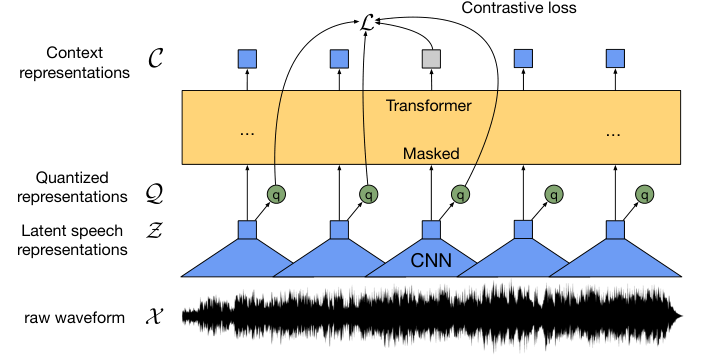
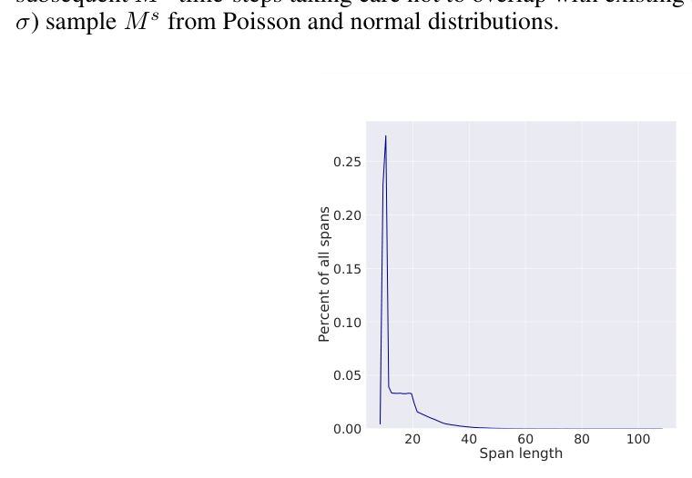
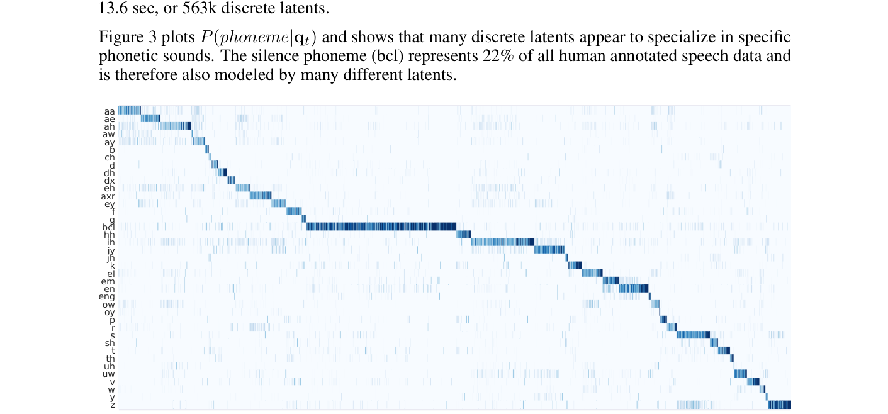

Alexei Baevski（作者信息）Alexei Baevski
Henry Zhou Abdelrahman Mohamed Michael Auli {abaevski,henryzhou7,abdo,michaelauli}@fb.com
作者：Henry Zhou、Abdelrahman Mohamed、Michael Auli；邮箱：{abaevski, henryzhou7, abdo, michaelauli}@fb.com。
Facebook AI（作者单位）Facebook AI
摘要Abstract
We show for the first time that learning powerful representations from speech audio alone followed by fine-tuning on transcribed speech can outperform the best semi-supervised methods while being conceptually simpler. wav2vec 2.0 masks the speech input in the latent space and solves a contrastive task defined over a quantization of the latent representations which are jointly learned. Experiments using all labeled data of Librispeech achieve 1.8/3.3 WER on the clean/other test sets. When lowering the amount of labeled data to one hour, wav2vec 2.0 outperforms the previous state of the art on the 100 hour subset while using 100 times less labeled data. Using just ten minutes of labeled data and pre-training on 53k hours of unlabeled data still achieves 4.8/8.2 WER. This demonstrates the feasibility of speech recognition with limited amounts of labeled data.1
我们首次证明：仅从语音音频中学习强大的表示，再在转写语音上微调，就能超过当时最好的半监督方法，而且在概念上更简洁。wav2vec 2.0 在潜在空间中对语音输入做掩码，并求解一个对比任务，该任务定义在一组联合学习得到的潜在表示量化（quantization）之上。使用 Librispeech 全部标注数据的实验在 clean/other 测试集上取得 1.8/3.3 的 WER。当把标注数据量降到 1 小时时，wav2vec 2.0 在 100 小时子集上超过了此前最佳结果，而所用的标注数据只有对方的 1/100。只用 10 分钟标注数据、并在 53k 小时无标注数据上预训练，仍能取得 4.8/8.2 的 WER。这证明了只用极少量标注数据实现语音识别的可行性。（脚注 1）
1 1 引言Introduction
Neural networks benefit from large quantities of labeled training data. However, in many settings labeled data is much harder to come by than unlabeled data: current speech recognition systems require thousands of hours of transcribed speech to reach acceptable performance which is not available for the vast majority of the nearly 7,000 languages spoken worldwide [31]. Learning purely from labeled examples does not resemble language acquisition in humans: infants learn language by listening to adults around them - a process that requires learning good representations of speech.
神经网络受益于大量带标注的训练数据。然而在许多场景下，标注数据比无标注数据难获得得多：当前的语音识别系统需要数千小时转写语音才能达到可接受的性能，而全世界近 7,000 种语言中的绝大多数都没有这样的资源 [31]。纯粹从带标注样本中学习并不符合人类习得语言的方式：婴儿是通过听周围成年人说话来学习语言的——这一过程要求先学到良好的语音表示。
In machine learning, self-supervised learning has emerged as a paradigm to learn general data representations from unlabeled examples and to fine-tune the model on labeled data. This has been particularly successful for natural language processing [43, 45, 9] and is an active research area for
在机器学习领域，自监督学习已经成为一种范式：先从无标注样本中学习通用的数据表示，再在标注数据上微调模型。这一思路在自然语言处理上取得了巨大成功 [43, 45, 9]，也是计算机视觉中一个活跃的研究方向 [20, 2, 36, 19, 6]。
computer vision [20, 2, 36, 19, 6].In this paper, we present a framework for self-supervised learning of representations from raw audio data. Our approach encodes speech audio via a multi-layer convolutional neural network and then masks spans of the resulting latent speech representations [26, 56], similar to masked language modeling [9]. The latent representations are fed to a Transformer network to build contextualized representations and the model is trained via a contrastive task where the true latent is to be distinguished
本文提出一个从原始音频数据做表示自监督学习的框架。我们的方法用多层卷积神经网络对语音音频编码，然后对得到的潜在语音表示做片段级掩码 [26, 56]，做法与掩码语言建模 [9] 类似。这些潜在表示被送入一个 Transformer 网络以构建上下文化表示，模型通过一个对比任务来训练：需要从一组干扰项中分辨出真正的潜在表示 [54, 49, 48, 28]（§ 2）。
from distractors [54, 49, 48, 28] (§ 2).As part of training, we learn discrete speech units [53, 32, 7, 18] via a gumbel softmax [24, 5] to represent the latent representations in the contrastive task (Figure 1) which we find to be more effective than non-quantized targets. After pre-training on unlabeled speech, the model is fine-tuned 1Code and models are available at https://github.com/pytorch/fairseq Preprint. Under review.
作为训练的一部分，我们通过 gumbel softmax [24, 5] 学习离散的语音单元 [53, 32, 7, 18]，用于在对比任务中表示潜在表示（Figure 1）；我们发现这比不做量化的目标更有效。在无标注语音上预训练之后，模型再进入微调阶段（脚注 1：代码与模型见 https://github.com/pytorch/fairseq；预印本。）（本稿）正在评审中。
Context representations
上下文表示
C`Contrastive loss
对比损失
LTransformer
这些潜在表示被送入一个 Transformer 网络以构建上下文化表示，模型通过一个对比任务来训练：需要从一组干扰项中分辨出真正的潜在表示 [54, 49, 48, 28]（§ 2）。
… …Masked q q q q q Quantized representations
图 1 内部标签：掩码（Masked）后的表示经量化得到量化表示（Quantized representations），q 为量化向量。
QLatent speech representations
潜在语音表示
ZXraw waveform CNN
原始波形 → CNN

图Figure 1: Illustration of our framework which jointly learns contextualized speech representations and an inventory of discretized speech units.
图 1：我们的框架示意图，上下文化语音表示与离散语音单元库是联合学习的。
on labeled data with a Connectionist Temporal Classification (CTC) loss [14, 4] to be used for downstream speech recognition tasks (§ 3) Previous work learned a quantization of the data followed by a contextualized representations with a self-attention model [5, 4], whereas our approach solves both problems end-to-end. Masking parts of the input with Transformer networks for speech has been explored [4, 26], but prior work relies either on a two-step pipeline or their model is trained by reconstructing the filter bank input features. Other related work includes learning representations from auto-encoding the input data [52, 11] or directly predicting future timesteps [8].
预训练后，模型在标注数据上以 CTC（Connectionist Temporal Classification）损失 [14, 4] 微调，用于下游语音识别任务（§ 3）。以往的工作是先学习数据的量化，再用自注意力模型学习上下文化表示 [5, 4]；而我们的方法把两个问题端到端地一并求解。用 Transformer 网络对语音输入做部分掩码此前也有人探索 [4, 26]，但先前工作要么依赖两段式流水线，要么模型是通过重建滤波器组（filter bank）输入特征来训练的。其他相关工作还包括通过自编码输入数据来学习表示 [52, 11]，或直接预测未来时间步 [8]。
Our results show that jointly learning discrete speech units with contextualized representations achieves substantially better results than fixed units learned in a prior step [4]. We also demonstrate the feasibility of ultra-low resource speech recognition: when using only 10 minutes of labeled data, our approach achieves word error rate (WER) 4.8/8.2 on the clean/other test sets of Librispeech. We set a new state of the art on TIMIT phoneme recognition as well as the 100 hour clean subset of Librispeech. Moreover, when we lower the amount of labeled data to just one hour, we still outperform the previous state of the art self-training method of [42] while using 100 times less labeled data and the same amount of unlabeled data. When we use all 960 hours of labeled data from Librispeech, then our model achieves 1.8/3.3 WER (§ 4, § 5).
我们的结果表明，把离散语音单元与上下文化表示联合学习，效果远好于之前先在单独一步中学好、随后固定不动的单元 [4]。我们还证明了超低资源语音识别的可行性：只用 10 分钟标注数据，我们的方法在 Librispeech 的 clean/other 测试集上取得词错误率（WER）4.8/8.2。我们还在 TIMIT 音素识别以及 Librispeech 的 100 小时 clean 子集上刷新了最佳纪录。此外，当我们把标注数据量降到只有 1 小时时，我们仍然超过此前最佳的自训练方法 [42]，而且标注数据只有对方的 1/100，所用无标注数据量相同。当使用 Librispeech 全部 960 小时标注数据时，我们的模型取得 1.8/3.3 的 WER（§ 4，§ 5）。
2 ModelModel
Our model is composed of a multi-layer convolutional feature encoder f : X 7→Z which takes as input raw audio X and outputs latent speech representations z1, . . . , zT for T time-steps. They are then fed to a Transformer g : Z 7→C to build representations c1, . . . , cT capturing information from the entire sequence [9, 5, 4]. The output of the feature encoder is discretized to qt with a quantization module Z 7→Q to represent the targets (Figure 1) in the self-supervised objective (§ 3.2). Compared to vq-wav2vec [5], our model builds context representations over continuous speech representations and self-attention captures dependencies over the entire sequence of latent representations end-to-end.
我们的模型由一个多层卷积特征编码器 f : X 7→ Z 组成，它以原始音频 X 为输入，输出 T 个时间步的潜在语音表示 z1, . . . , zT。这些表示随后被送入一个 Transformer g : Z 7→ C，构建从整个序列中捕获信息的表示 c1, . . . , cT [9, 5, 4]。特征编码器的输出经由一个量化模块 Z 7→ Q 被离散化为 qt，用来表示自监督目标中的目标（Figure 1）（§ 3.2）。与 vq-wav2vec [5] 不同，我们的模型在连续语音表示之上构建上下文表示，并且自注意力以端到端方式捕获整条潜在表示序列上的依赖关系。
特征编码器Feature encoder.
The encoder consists of several blocks containing a temporal convolution followed by layer normalization [1] and a GELU activation function [21]. The raw waveform input to the encoder is normalized to zero mean and unit variance. The total stride of the encoder determines the number of time-steps T which are input to the Transformer (§ 4.2).
编码器由若干模块组成，每个模块包含一层时间维卷积，接层归一化（layer normalization）[1] 和 GELU 激活函数 [21]。送入编码器的原始波形会被归一化为零均值、单位方差。编码器的总步幅决定了送入 Transformer 的时间步数量 T（§ 4.2）。
用 Transformer 构建上下文化表示Contextualized representations with Transformers.
The output of the feature encoder is fed to a context network which follows the Transformer architecture [55, 9, 33]. Instead of fixed positional embeddings which encode absolute positional information, we use a convolutional layer similar to [37, 4, 57] which acts as relative positional embedding. We add the output of the convolution followed by a GELU to the inputs and then apply layer normalization.
特征编码器的输出被送入一个遵循 Transformer 架构 [55, 9, 33] 的上下文网络。我们不使用编码绝对位置信息的固定位置嵌入，而是采用一个类似 [37, 4, 57] 的卷积层，充当相对位置嵌入。我们把该卷积层（后接 GELU）的输出加到输入上，然后再做层归一化。
量化模块Quantization module.
For self-supervised training we discretize the output of the feature encoder z to a finite set of speech representations via product quantization [25]. This choice led to good results in prior work which learned discrete units in a first step followed by learning contextualized representations [5]. Product quantization amounts to choosing quantized representations from multiple codebooks and concatenating them. Given G codebooks, or groups, with V entries e ∈ RV ×d/G, we choose one entry from each codebook and concatenate the resulting vectors e1, . . . , eG and apply a linear transformation Rd 7→Rf to obtain q ∈Rf.
在自监督训练中，我们通过乘积量化（product quantization）[25] 把特征编码器的输出 z 离散化到一组有限的语音表示。这一选择在先前工作中取得了好效果：那项工作先在第一步学习离散单元，再学习上下文化表示 [5]。乘积量化就是从多个码本（codebook）中各选一个量化表示，再把它们拼接起来。给定 G 个码本（或称分组），每个码本有 V 个条目 e ∈ R^(V×d/G)，我们从每个码本中选一个条目，把所得向量 e1, . . . , eG 拼接，再施加一个线性变换 R^d 7→ R^f，得到 q ∈ R^f。
The Gumbel softmax enables choosing discrete codebook entries in a fully differentiable way [16, 24, 35]. We use the straight-through estimator [26] and setup G hard Gumbel softmax operations [24]. The feature encoder output z is mapped to l ∈RG×V logits and the probabilities for choosing the v-th codebook entry for group g are pg,v = exp(lg,v + nv)/τ PV k=1 exp(lg,k + nk)/τ
Gumbel softmax 使得以完全可微的方式选取离散码本条目成为可能 [16, 24, 35]。我们使用直通估计器（straight-through estimator）[26]，并设置 G 个硬（hard）Gumbel softmax 操作 [24]。特征编码器输出 z 被映射为 l ∈ R^{G×V} 个 logit，第 g 组选择第 v 个码本条目的概率为 pg,v = exp(lg,v + nv)/τ / Σ_{k=1..V} exp(lg,k + nk)/τ（式 1），其中 τ 为非负温度，n = −log(−log(u))，u 为 U(0, 1) 均匀采样。
, (1)where τ is a non-negative temperature, n = −log(−log(u)) and u are uniform samples from U(0, 1). During the forward pass, codeword i is chosen by i = argmaxjpg,j and in the backward pass, the true gradient of the Gumbel softmax outputs is used.
特征编码器输出 z 被映射为 l ∈ R^{G×V} 个 logit，第 g 组选择第 v 个码本条目的概率为 pg,v = exp(lg,v + nv)/τ / Σ_{k=1..V} exp(lg,k + nk)/τ（式 1），其中 τ 为非负温度，n = −log(−log(u))，u 为 U(0, 1) 均匀采样。前向传播中按 i = argmax_j pg,j 选取码字 i；反向传播中则使用 Gumbel softmax 输出的真实梯度。
3 3 训练Training
To pre-train the model we mask a certain proportion of time steps in the latent feature encoder space (§ 3.1), similar to masked language modeling in BERT [9]. The training objective requires identifying the correct quantized latent audio representation in a set of distractors for each masked time step (§ 3.2) and the final model is fine-tuned on the labeled data (§ 3.3).
预训练时，我们在潜在特征编码器空间中对一定比例的时间步做掩码（§ 3.1），做法类似 BERT 中的掩码语言建模 [9]。训练目标要求：对每个被掩码的时间步，在一组干扰项中识别出正确的量化潜在音频表示（§ 3.2）；最终模型再在标注数据上微调（§ 3.3）。
3.1 3.1 掩码Masking
We mask a proportion of the feature encoder outputs, or time steps before feeding them to the context network and replace them with a trained feature vector shared between all masked time steps; we do not mask inputs to the quantization module. To mask the latent speech representations output by the encoder, we randomly sample without replacement a certain proportion p of all time steps to be starting indices and then mask the subsequent M consecutive time steps from every sampled index; spans may overlap.
在把特征编码器的输出（即各时间步）送入上下文网络之前，我们对其一部分做掩码，并用一个在所有被掩码时间步之间共享的、经训练得到的特征向量来替换；我们不对量化模块的输入做掩码。为了对编码器输出的潜在语音表示做掩码，我们按无放回随机采样，以某个比例 p 抽取所有时间步作为起始下标，然后从每个被采样的下标开始掩码其后连续 M 个时间步；片段之间允许重叠。
3.2 3.2 训练目标Objective
During pre-training, we learn representations of speech audio by solving a contrastive task Lm which requires to identify the true quantized latent speech representation for a masked time step within a set of distractors. This is augmented by a codebook diversity loss Ld to encourage the model to use the codebook entries equally often.
预训练时，我们通过求解对比任务 Lm 来学习语音音频的表示：对每个被掩码的时间步，需要在一组干扰项中识别出真正的量化潜在语音表示。在此之上我们附加一个码本多样性损失 Ld，鼓励模型均匀地使用码本条目。
L = Lm + αLd
总损失 L = Lm + αLd（式 2），其中 α 为可调超参数。
(2)where α is a tuned hyperparameter.
总损失 L = Lm + αLd（式 2），其中 α 为可调超参数。
对比损失Contrastive Loss.
Given context network output ct centered over masked time step t, the model needs to identify the true quantized latent speech representation qt in a set of K + 1 quantized candidate representations ˜q ∈Qt which includes qt and K distractors [23, 54]. Distractors are uniformly sampled from other masked time steps of the same utterance. The loss is defined as
给定以被掩码时间步 t 为中心的上下文网络输出 ct，模型需要在 K + 1 个量化候选表示 q̃ ∈ Qt 中识别出真正的量化潜在语音表示 qt，其中 Qt 包含 qt 和 K 个干扰项 [23, 54]。干扰项从同一条语音的其他被掩码时间步中均匀采样得到。该损失定义为：
Lm = −log exp(sim(ct, qt)/κ) P˜q∼Qt exp(sim(ct, ˜q)/κ) (3)where we compute the cosine similarity sim(a, b) = aT b/∥a∥∥b∥between context representations and quantized latent speech representations [19, 6].
（分母为对 q̃~Qt 求和的 exp(sim(ct, q̃)/κ)），其中我们在上下文表示与量化潜在语音表示之间计算余弦相似度 sim(a, b) = aᵀb/‖a‖‖b‖ [19, 6]。
多样性损失Diversity Loss.
The contrastive task depends on the codebook to represent both positive and negative examples and the diversity loss Ld is designed to increase the use of the quantized codebook representations [10]. We encourage the equal use of the V entries in each of the G codebooks by maximizing the entropy of the averaged softmax distribution l over the codebook entries for each codebook ¯pg across a batch of utterances; the softmax disribution does not contain the gumbel noise nor a temperature:2
对比任务依赖码本来表示正例与负例，多样性损失 Ld 的设计目的是提高量化码本表示的利用率 [10]。我们鼓励 G 个码本中每个码本的 V 个条目被均匀使用：对一个批次内各条语音，在码本条目上求平均后的 softmax 分布 l̄（记为 p̄g），最大化其熵；此处的 softmax 分布不含 gumbel 噪声，也不含温度（脚注 2）。
G XLd = 1 GVg=1 −H(¯pg) = 1 GV3.3 4.3 微调Fine-tuning
G XV Xv=1 ¯pg,v log ¯pg,v (4)g=1Pre-trained models are fine-tuned for speech recognition by adding a randomly initialized linear projection on top of the context network into C classes representing the vocabulary of the task [4]. For Librispeech, we have 29 tokens for character targets plus a word boundary token. Models are optimized by minimizing a CTC loss [14] and we apply a modified version of SpecAugment [41] by masking to time-steps and channels during training which delays overfitting and significantly improves the final error rates, especially on the Libri-light subsets with few labeled examples.
预训练模型面向语音识别做微调的方式是：在上下文网络之上加一个随机初始化的线性投影，输出 C 个类别，即任务词表 [4]。对 Librispeech，我们使用 29 个字符目标 token，外加一个词边界 token。模型通过最小化 CTC 损失 [14] 来优化，并施加一个修改版的 SpecAugment [41]：训练中对时间步和通道做掩码；这能推迟过拟合并显著降低最终错误率，在标注样本很少的 Libri-light 子集上尤其明显。
4 4 实验设置Experimental Setup
4.1 4.1 数据集Datasets
As unlabeled data we consider the Librispeech corpus [40] without transcriptions containing 960 hours of audio (LS-960) or the audio data from LibriVox (LV-60k). For the latter we follow the preprocessing of [27] resulting in 53.2k hours of audio. We fine-tune on five labeled data settings: 960 hours of transcribed Librispeech, the train-clean-100 subset comprising 100 hours (100 hours labeled), as well as the Libri-light limited resource training subsets originally extracted from Librispeech, these are train-10h (10 hours labeled), train-1h (1 hour labeled), train-10min (10 min labeled). We follow the evaluation protocol of Libri-light for these splits and evaluate on the standard Librispech dev-other/clean and test-clean/other sets.
无标注数据方面，我们考虑不带转写的 Librispeech 语料库 [40]，含 960 小时音频（LS-960），或 LibriVox 的音频数据（LV-60k）。对后者，我们沿用 [27] 的预处理流程，得到 53.2k 小时音频。我们在五种标注数据设置下微调：960 小时转写的 Librispeech、train-clean-100 子集 100 小时（标注 100 小时），以及最初从 Librispeech 抽取的 Libri-light 有限资源训练子集：train-10h（标注 10 小时）、train-1h（标注 1 小时）、train-10min（标注 10 分钟）。对这些划分，我们遵循 Libri-light 的评测协议，并在标准的 Librispeech dev-other/clean 与 test-clean/other 集合上评测。
We fine-tune the pre-trained models for phoneme recognition on the TIMIT dataset [13]. It contains five hours of audio recordings with detailed phoneme labels. We use the standard train, dev and test split and follow the standard protocol of collapsing phone labels to 39 classes.
我们还在 TIMIT 数据集 [13] 上把预训练模型微调用于音素识别。该数据集包含 5 小时带详细音素标注的录音。我们使用标准的 train/dev/test 划分，并遵循标准协议把音素标签折叠为 39 类。
4.2 4.2 预训练Pre-training
Models are implemented in fairseq [39]. For masking, we sample p = 0.065 of all time-steps to be starting indices and mask the subsequent M = 10 time-steps. This results in approximately 49% of all time steps to be masked with a mean span length of 14.7, or 299ms (see Appendix A for more details on masking).
模型基于 fairseq [39] 实现。掩码时，我们以 p = 0.065 从所有时间步中采样起始下标，并掩码其后 M = 10 个时间步。这使得约 49% 的时间步被掩码，平均片段长度为 14.7 个时间步，即 299ms（掩码的更多细节见附录 A）。
The feature encoder contains seven blocks and the temporal convolutions in each block have 512 channels with strides (5,2,2,2,2,2,2) and kernel widths (10,3,3,3,3,2,2). This results in an encoder output frequency of 49 hz with a stride of about 20ms between each sample, and a receptive field of 400 input samples or 25ms of audio. The convolutional layer modeling relative positional embeddings has kernel size 128 and 16 groups.
特征编码器包含 7 个模块，每个模块中的时间维卷积有 512 个通道，步幅为 (5,2,2,2,2,2,2)，卷积核宽度为 (10,3,3,3,3,2,2)。这使编码器的输出帧率为 49 hz，样本间步幅约 20ms，感受野为 400 个输入采样点，即 25ms 音频。用于建模相对位置嵌入的卷积层卷积核大小为 128，分 16 组。
We experiment with two model configurations which use the same encoder architecture but differ in the Transformer setup: BASE contains 12 transformer blocks, model dimension 768, inner dimension (FFN) 3,072 and 8 attention heads. Batches are built by cropping 250k audio samples, or 15.6sec, from each example. Crops are batched together to not exceed 1.4m samples per GPU and we train on a total of 64 V100 GPUs for 1.6 days [38]; the total batch size is 1.6h.
我们实验了两种模型配置，二者编码器架构相同，但 Transformer 设置不同：BASE 包含 12 个 Transformer 块，模型维度 768，内部维度（FFN）3,072，8 个注意力头。构造批次时，从每条样本裁剪 250k 个音频采样点，即 15.6 秒。裁剪结果组成批次，每 GPU 不超过 1.4m 个采样点；我们总共用 64 张 V100 GPU 训练 1.6 天 [38]；总批次大小为 1.6 小时音频。
The LARGE model contains 24 transformer blocks with model dimension 1,024, inner dimension 4,096 and 16 attention heads. We crop 320k audio samples, or 20sec, with a limit of 1.2m samples per GPU and train on 128 V100 GPUs over 2.3 days for Librispeech and 5.2 days for LibriVox; the total batch size is 2.7h. We use dropout 0.1 in the Transformer, at the output of the feature encoder and the input to the quantization module. Layers are dropped at a rate of 0.05 for BASE and 0.2 for LARGE [22, 12]; there is no layer drop for LV-60k.
LARGE 模型包含 24 个 Transformer 块，模型维度 1,024，内部维度 4,096，16 个注意力头。我们裁剪 320k 个音频采样点（20 秒），每 GPU 上限 1.2m 个采样点；在 Librispeech 上用 128 张 V100 GPU 训练 2.3 天，在 LibriVox 上训练 5.2 天；总批次大小为 2.7 小时音频。我们在 Transformer 内部、特征编码器输出端以及量化模块输入端都使用 dropout 0.1。层丢弃（layer drop）比例为：BASE 0.05，LARGE 0.2 [22, 12]；LV-60k 上不使用层丢弃。
2Our implementation maximizes perplexity GV −PG g=1 exp(−PV v=1 pgv log pgv) GV which is equivalent.
脚注 2：我们的实现是最大化困惑度 GV − Σg=1..G exp(−Σv=1..V pgv log pgv)/GV，二者是等价的。
We optimize with Adam [29], warming up the learning rate for the first 8% of updates to a peak of 5 × 10−4 for BASE and 3 × 10−4 for LARGE, and then linearly decay it. LARGE trains for 250k updates, BASE for 400k updates, and LARGE on LV-60k for 600k updates. We use weight α = 0.1 for the diversity loss Equation 2. For the quantization module we use G = 2 and V = 320 for both models, resulting in a theoretical maximum of 102.4k codewords. Entries are of size d/G = 128 for BASE amd d/G = 384 for LARGE. The Gumbel softmax temperature τ is annealed from 2 to a minimum of 0.5 for BASE and 0.1 for LARGE by a factor of 0.999995 at every update. The temperature in the contrastive loss (Equation 3) is set to κ = 0.1. For the smaller Librispeech dataset, we regularize the model by applying an L2 penalty to the activations of the final layer of the feature encoder and scale down the gradients for the encoder by a factor of 10. We also use a slightly different encoder architecture where we do not use layer normalization, and instead of normalizing the raw waveform, the output of the first encoder layer is normalized. In the contrastive loss we use K = 100 distractors. We choose the training checkpoint with the lowest Lm on the validation set.
我们使用 Adam [29] 优化：在前 8% 次更新内把学习率预热到峰值——BASE 为 5 × 10−4，LARGE 为 3 × 10−4，之后线性衰减。LARGE 训练 250k 次更新，BASE 训练 400k 次更新，LARGE 在 LV-60k 上训练 600k 次更新。多样性损失（公式 2）的权重取 α = 0.1。量化模块对两种模型都使用 G = 2、V = 320，理论码字上限为 102.4k。码本条目大小为 d/G = 128（BASE）和 d/G = 384（LARGE）。Gumbel softmax 的温度 τ 从 2 开始退火，按每步乘 0.999995 的因子，BASE 最低降到 0.5，LARGE 最低降到 0.1。对比损失（公式 3）中的温度设为 κ = 0.1。对较小的 Librispeech 数据集，我们对特征编码器最后一层的激活施加 L2 惩罚，并把编码器的梯度缩小 10 倍来正则化模型。我们还使用一个略有差异的编码器架构：不使用层归一化，并且不归一化原始波形，而是对编码器第一层的输出做归一化。对比损失中我们使用 K = 100 个干扰项。我们选取验证集上 Lm 最低的训练检查点。
4.3 4.3 微调Fine-tuning
After pre-training we fine-tune the learned representations on labeled data and add a randomly initialized output layer on top of the Transformer to predict characters (Librispeech/Libri-light) or phonemes (TIMIT). For Libri-light, we train three seeds with two different learning rates (2e-5 and 3e-5) for all subsets and choose the configuration with lowest WER on dev-other subset decoded with the official 4-gram language model (LM) with beam 50 and fixed model weights (LM weight 2, word insertion penalty -1). For BASE on the labeled 960h subset we use a learning rate of 1e-4.
预训练之后，我们在标注数据上微调所学表示，在 Transformer 之上加一个随机初始化的输出层，用于预测字符（Librispeech/Libri-light）或音素（TIMIT）。对 Libri-light，我们对所有子集各用三种随机种子、两种学习率（2e-5 和 3e-5）训练，并选出在 dev-other 子集上 WER 最低的配置；解码使用官方 4-gram 语言模型（LM），beam 为 50，模型权重固定（LM 权重 2，词插入惩罚 -1）。对 BASE 在 960h 标注子集上，我们使用 1e-4 的学习率。
We optimize with Adam and a tri-state rate schedule where the learning rate is warmed up for the first 10% of updates, held constant for the next 40% and then linearly decayed for the remainder. BASE uses a batch size of 3.2m samples per GPU and we fine-tune on 8 GPUs, giving a total batch size of 1,600sec. LARGE batches 1.28m samples on each GPU and we fine-tune on 24 GPUs, resulting in an effective batch size of 1,920sec. For the first 10k updates only the output classifier is trained, after which the Transformer is also updated. The feature encoder is not trained during fine-tuning. We mask the feature encoder representations with a strategy similar to SpecAugment [41] detailed in Appendix B.
我们使用 Adam 优化，并采用三阶段学习率调度：前 10% 次更新预热，接下来的 40% 保持不变，其余阶段线性衰减。BASE 每 GPU 批次大小为 3.2m 个采样点，我们在 8 张 GPU 上微调，总批次大小为 1,600 秒音频。LARGE 每 GPU 批次 1.28m 个采样点，我们在 24 张 GPU 上微调，有效批次大小为 1,920 秒音频。前 10k 次更新只训练输出分类器，之后 Transformer 也一并更新。微调期间特征编码器不参与训练。我们用一种类似 SpecAugment [41] 的策略对特征编码器表示做掩码，细节见附录 B。
4.4 4.4 语言模型与解码Language Models and Decoding
We consider two types of language models (LM): a 4-gram model and a Transformer [3] trained on the Librispeech LM corpus. The Transformer LM is identical to [51] and contains 20 blocks, model dimension 1,280, inner dimension 6,144 and 16 attention heads. We tune the weights of the language model (interval [0, 5]) and a word insertion penalty ([−5, 5]) via Bayesian optimization3: we run 128 trials with beam 500 for the 4-gram LM and beam 50 for the Transformer LM and choose the best set of weights according to performance on dev-other. Test performance is measured with beam 1,500 for the n-gram LM and beam 500 for the Transformer LM. We use the beam search decoder of [44].
我们考虑两类语言模型（LM）：一个 4-gram 模型，以及一个在 Librispeech LM 语料上训练的 Transformer [3]。该 Transformer LM 与 [51] 相同，包含 20 个块，模型维度 1,280，内部维度 6,144，16 个注意力头。我们通过贝叶斯优化来调语言模型的权重（区间 [0, 5]）与词插入惩罚（区间 [−5, 5]）³：对 4-gram LM 以 beam 500 运行 128 次试验，对 Transformer LM 以 beam 50 运行，并按 dev-other 上的表现选出最优权重组合（脚注 3：贝叶斯优化工具见 facebook/Ax）。测试集性能的测量使用 beam 1,500（n-gram LM）和 beam 500（Transformer LM）。我们使用 [44] 的束搜索（beam search）解码器。
5 5 实验结果Results
5.1 5.1 低资源标注数据评测Low-Resource Labeled Data Evaluation
We first evaluate our pre-trained models in settings where the amount of labeled data is limited to get a sense of how the representations learned on unlabeled data can improve low resource settings. If a pre-trained model captures the structure of speech, then it should require few labeled examples to fine-tune it for speech recognition. The models are pre-trained on the audio data of either Librispeech (LS-960) or LibriVox (LV-60k) and most results are obtained by decoding with a Transformer language model (Transf.); Appendix C shows results with no language model at all as well as with an n-gram language model.
我们首先在标注数据量受限的设置下评测预训练模型，以考察在无标注数据上学到的表示能在多大程度上改善低资源场景。如果预训练模型确实捕获了语音的结构，那么为语音识别微调它所需的标注样本就应该很少。模型在 Librispeech（LS-960）或 LibriVox（LV-60k）的音频数据上预训练，多数结果用 Transformer 语言模型（Transf.）解码得到；附录 C 给出了完全不用语言模型、以及用 n-gram 语言模型的结果。
The LARGE model pre-trained on LV-60k and fine-tuned on only 10 minutes of labeled data achieves a word error rate of 5.2/8.6 on the Librispeech clean/other test sets. Ten minutes of labeled data corresponds to just 48 recordings with an average length of 12.5 seconds. This demonstrates that ultra-low resource speech recognition is possible with self-supervised learning on unlabeled data.
在 LV-60k 上预训练的 LARGE 模型，仅用 10 分钟标注数据微调，就在 Librispeech 的 clean/other 测试集上取得 5.2/8.6 的词错误率。10 分钟标注数据只对应 48 条录音，平均长度 12.5 秒。这证明，借助在无标注数据上的自监督学习，超低资源的语音识别是可行的。
3https://github.com/facebook/Ax
脚注 3：https://github.com/facebook/Ax
Table 1: WER on the Librispeech dev/test sets when training on the Libri-light low-resource labeled data setups of 10 min, 1 hour, 10 hours and the clean 100h subset of Librispeech. Models use either the audio of Librispeech (LS-960) or the larger LibriVox (LV-60k) as unlabeled data. We consider two model sizes: BASE (95m parameters) and LARGE (317m parameters). Prior work used 860 unlabeled hours (LS-860) but the total with labeled data is 960 hours and comparable to our setup.
表 1：在 Libri-light 低资源标注数据设置（10 分钟、1 小时、10 小时）以及 Librispeech 的 clean 100h 子集上训练时，Librispeech dev/test 集上的 WER。模型分别以 Librispeech 音频（LS-960）或更大的 LibriVox（LV-60k）作为无标注数据。我们考察两种模型规模：BASE（95m 参数）与 LARGE（317m 参数）。先前工作使用 860 小时无标注数据（LS-860），但加上标注数据后总量为 960 小时，与我们的设置相当。
| Unlabeled | ||||||
|---|---|---|---|---|---|---|
| Model | LM | |||||
| data | clean | other | clean | other | ||
| 10 min labeled | ||||||
| Discrete BERT [4] | LS-960 | 4-gram | 15.7 | 24.1 | 16.3 | 25.2 |
| BASE | LS-960 | 4-gram | 8.9 | 15.7 | 9.1 | 15.6 |
| Transf. | 6.6 | 13.2 | 6.9 | 12.9 | ||
| LARGE | LS-960 | Transf. | 6.6 | 10.6 | 6.8 | 10.8 |
| LV-60k | Transf. | 4.6 | 7.9 | 4.8 | 8.2 | |
| 1h labeled | ||||||
| Discrete BERT [4] | LS-960 | 4-gram | 8.5 | 16.4 | 9.0 | 17.6 |
| BASE | LS-960 | 4-gram | 5.0 | 10.8 | 5.5 | 11.3 |
| Transf. | 3.8 | 9.0 | 4.0 | 9.3 | ||
| LARGE | LS-960 | Transf. | 3.8 | 7.1 | 3.9 | 7.6 |
| LV-60k | Transf. | 2.9 | 5.4 | 2.9 | 5.8 | |
| 10h labeled | ||||||
| Discrete BERT [4] | LS-960 | 4-gram | 5.3 | 13.2 | 5.9 | 14.1 |
| LS-960 | 4-gram+Transf. | 23.51 | 25.48 | 24.37 | 26.02 | |
| LV-60k | 4-gram+Transf. | 17.00 | 19.34 | 18.03 | 19.92 | |
| BASE | LS-960 | 4-gram | 3.8 | 9.1 | 4.3 | 9.5 |
| Transf. | 2.9 | 7.4 | 3.2 | 7.8 | ||
| LARGE | LS-960 | Transf. | 2.9 | 5.7 | 3.2 | 6.1 |
| LV-60k | Transf. | 2.4 | 4.8 | 2.6 | 4.9 | |
| 100h labeled | ||||||
| - | 4-gram | 5.0 | 19.5 | 5.8 | 18.6 | |
| TTS data augm. [30] | - | LSTM | 4.3 | 13.5 | ||
| Discrete BERT [4] | LS-960 | 4-gram | 4.0 | 10.9 | 4.5 | 12.1 |
| LS-860 | 4-gram+Transf. | 4.98 | 7.97 | 5.59 | 8.95 | |
| LV-60k | 4-gram+Transf. | 3.19 | 6.14 | 3.72 | 7.11 | |
| Noisy student [42] | LS-860 | LSTM | 3.9 | 8.8 | 4.2 | 8.6 |
| BASE | LS-960 | 4-gram | 2.7 | 7.9 | 3.4 | 8.0 |
| Transf. | 2.2 | 6.3 | 2.6 | 6.3 | ||
| LARGE | LS-960 | Transf. | 2.1 | 4.8 | 2.3 | 5.0 |
| LV-60k | Transf. | 1.9 | 4.0 | 2.0 | 4.0 |
10 10 分钟标注（附录表格碎片）min labeled
1h labeled1h labeled
10h labeled10h labeled
Iter. pseudo-labeling [58] LS-960 4-gram+Transf.
（表格行）Discrete BERT [4]｜LS-960｜4-gram：5.3 13.2 5.9 14.1；Iter. pseudo-labeling [58]｜LS-960｜4-gram+Transf.。
100h labeled100h labeled
Hybrid DNN/HMM [34]
（表格行）Hybrid DNN/HMM [34]｜-｜4-gram：5.0 19.5 5.8 18.6；TTS data augm.。
Iter. pseudo-labeling [58] LS-860 4-gram+Transf.
（表格行）[30]｜-｜LSTM：4.3 13.5；Discrete BERT [4]｜LS-960｜4-gram：4.0 10.9 4.5 12.1；Iter. pseudo-labeling [58]｜LS-860｜4-gram+Transf.。
Our approach of jointly learning discrete units and contextualized representations clearly improves over previous work which learned quantized audio units in a separate step [4], reducing WER by a about a third.
（Table 1 数值碎块续）TTS 数据增强 [30]：4.3 13.5 4.0 10.9 4.5 12.1；Iter. pseudo-labeling [58]：4.98 7.97 5.59 8.95 3.19 6.14 3.72 7.11；Noisy student [42]：3.9 8.8 4.2 8.6 2.7 7.9 3.4 8.0 2.2 6.3 2.6 6.3 2.1 4.8 2.3 5.0 1.9 4.0 2.0 4.0。我们联合学习离散单元与上下文化表示的方法，明显优于先在单独一步中学习量化音频单元的先前工作 [4]，WER 降低了约三分之一。
A recent iterative self-training approach [42] represents the state of the art on the clean 100 hour subset of Librispeech but it requires multiple iterations of labeling, filtering, and re-training. Our approach is simpler: we pre-train on the unlabeled data and fine-tune on the labeled data. On the 100 hour subset of Librispeech, their method achieves WER 4.2/8.6 on test-clean/other which compares to WER 2.3/5.0 with the LARGE model in a like for like setup, a relative WER reduction of 45%/42%.
近期一种迭代式自训练方法 [42] 在 Librispeech 的 clean 100 小时子集上代表了此前最佳水平，但它需要多轮「打伪标签—过滤—重训」的迭代。我们的方法更简单：在无标注数据上预训练，再在标注数据上微调。在 Librispeech 的 100 小时子集上，他们的方法在 test-clean/other 上取得 WER 4.2/8.6；而在完全对等的设置下，我们的 LARGE 模型取得 WER 2.3/5.0，相对 WER 降幅为 45%/42%。
When the LARGE model uses an order of magnitude less labeled data (10h labeled), then it still achieves WER 3.2/6.1, an error reduction of 24%/29% relative to iterative self-training. Using only a single hour of labeled data, the same model achieves WER 3.9/7.6 which improves on both test-clean and test-other by 7%/12% - with two orders of magnitude less labeled data. We note that the Libri-
当 LARGE 模型使用少一个数量级的标注数据（10 小时标注）时，仍取得 WER 3.2/6.1，相对迭代式自训练的错误率降幅为 24%/29%。只用 1 小时标注数据，同一模型取得 WER 3.9/7.6，在 test-clean 和 test-other 上分别提升 7%/12%——而标注数据少了两个数量级。我们注意到 Libri-（原文在此断行，接下页「light data splits…」）。
Table 2: WER on Librispeech when using all 960 hours of labeled data (cf. Table 1).
表 2：使用全部 960 小时标注数据时 Librispeech 上的 WER（参见 Table 1）。
| Unlabeled | dev | test | |||||||||
|---|---|---|---|---|---|---|---|---|---|---|---|
| Model | LM | ||||||||||
| data | clean | other | clean | other | |||||||
| Supervised | |||||||||||
| CTC Transf [51] | - | CLM+Transf. | 2.20 | 4.94 | 2.47 | 5.45 | |||||
| S2S Transf. | [51] | - | CLM+Transf. | 2.10 | 4.79 | 2.33 | 5.17 | ||||
| Transf. Transducer [60] | - | Transf. | - | - | 2.0 | 4.6 | |||||
| ContextNet [17] | - | LSTM | 1.9 | 3.9 | 1.9 | 4.1 | |||||
| Conformer [15] | - | LSTM | 2.1 | 4.3 | 1.9 | 3.9 |
有监督（表格碎片）Supervised
半监督（表格碎片）Semi-supervised
CTC Transf. + PL [51] LV-60k CLM+Transf.
（表格行）CTC｜Transf. + PL [51]｜LV-60k｜CLM+Transf.。
S2S Transf. + PL [51] LV-60k CLM+Transf.
（表格行）2.10 4.79 2.33 4.54；S2S｜Transf. + PL [51]｜LV-60k｜CLM+Transf.。
2.00 3.65 2.09 4.11Iter. pseudo-labeling [58] LV-60k 4-gram+Transf.
（表格行）2.00 3.65 2.09 4.11；Iter. pseudo-labeling [58]｜LV-60k｜4-gram+Transf.。
1.85 3.26 2.10 4.01Noisy student [42] LV-60k LSTM1.6 3.4 1.7 3.4本文方法（表格碎片）This work
LARGE - from scratch
表头与首行：模型（Model）｜无标注数据｜LM｜dev/test（clean/other）；LARGE 从头训练（from scratch）：None 2.8 7.6 3.0 7.7；4-gram 1.8 5.4 2.6 5.8；Transf.（后续数值照原文）。
BASE LS-960 Transf.
（表格行）BASE｜LS-960｜Transf.（Transformer LM）。
1.8 4.7 2.1 4.8LARGE LS-960 Transf.
（表格行）6.6 13.2 6.9 12.9｜LARGE｜LS-960｜Transf.（Transformer LM）。
LV-60k Transf.
（表格行）6.6 10.6 6.8 10.8｜LV-60k｜Transf.。
1.6 3.0 1.8 3.3light data splits contain both clean and noisy data leading to better accuracy on test-other compared to test-clean. Increasing model size reduces WER on all setups with the largest improvements on test-other (BASE vs. LARGE both on LS-960) and increasing the amount of unlabeled training data also leads to large improvements (LARGE LS-960 vs. LV-60k).
（Table 2 本文方法数值碎块）LARGE - from scratch（从头训练）：1.7 4.3 2.1 4.6 1.8 4.7 2.1 4.8 1.7 3.9 2.0 4.1 1.6 3.0 1.8 3.3。说明：Libri-light 数据划分同时包含干净与嘈杂数据，这使得 test-other 上的准确率反而好于 test-clean。增大模型规模在所有设置上都降低了 WER，其中 test-other 上的提升最大（同在 LS-960 上的 BASE 与 LARGE 对比）；增加无标注训练数据量也带来显著提升（LARGE 在 LS-960 与 LV-60k 上的对比）。
5.2 5.2 Librispeech 高资源标注数据评测High-Resource Labeled Data Evaluation on Librispeech
In this section we evaluate the performance when large quantities of labeled speech are available to assess the effectiveness of our approach in a high resource setup. Specifically, we fine-tune the same models as before on the full 960 hours of labeled Librispeech: BASE and LARGE pre-trained on LS-960 as well as LARGE pre-trained on LV-60k.
本节评测有大量标注语音可用时的性能，以评估我们的方法在高资源设置下的有效性。具体来说，我们把此前的同一批模型在完整的 960 小时 Librispeech 标注数据上微调：分别在 LS-960 上预训练的 BASE 和 LARGE，以及在 LV-60k 上预训练的 LARGE。
Table 2 shows that our approach achieves WER 1.8/3.3 on test-clean/other on the full Librispeech benchmark. This is despite a weaker baseline architecture: supervised training of our architecture achieves WER 2.1/4.6 (LARGE - from scratch) compared to WER 1.9/4.1 for ContextNet [17], the baseline architecture of the state of the art [42]. We use a simple Transformer with CTC which does not perform as well as seq2seq models [51].
表 2 表明，在完整的 Librispeech 基准上，我们的方法在 test-clean/other 上取得 WER 1.8/3.3。这还是在我们基线架构偏弱的情况下取得的：我们的架构从头监督训练只取得 WER 2.1/4.6（LARGE - from scratch），而作为最佳方法 [42] 基线架构的 ContextNet [17] 为 WER 1.9/4.1。我们使用的只是简单的 Transformer + CTC，其表现不及 seq2seq 模型 [51]。
Note that the vocabulary of our acoustic model (characters) does not match the vocabulary of the LM (words) which delays feedback from the LM and is likely to be detrimental. Most recent work [51, 58, 17, 42] uses the better performing word pieces [50] for both models. Moreover, our result is achieved without any data balancing such as [42]. Finally, self-training is likely complimentary to pre-training and their combination may yield even better results. Appendix E presents a detailed error analysis of our pre-trained models in various labeled data setups.
需要注意的是，我们声学模型的词表（字符）与 LM 的词表（词）不一致，这会推迟来自 LM 的反馈，很可能是有害的。大多数近期工作 [51, 58, 17, 42] 对两个模型都使用表现更好的子词（word piece）[50]。而且，我们的结果没有使用任何数据平衡手段（如 [42]）。最后，自训练与预训练很可能是互补的，二者结合或许能取得更好的结果。附录 E 给出了预训练模型在各种标注数据设置下的详细错误分析。
5.3 5.3 TIMIT 音素识别Phoneme Recognition on TIMIT
Next, we evaluate accuracy on TIMIT phoneme recognition by fine-tuning the pre-trained models on the labeled TIMIT training data. We fine-tune as for the 10 hour subset of Libri-light but do not use a language model. Table 3 shows that our approach can achieve a new state of the art on this dataset, reducing PER by a relative 23%/29% over the next best result on the dev/test sets. Appendix D shows an analysis of how the discrete latent speech representations related to phonemes. Other recent work on pre-training which evaluates on TIMIT includes [47] who solve multiple tasks to learn good representations of speech.
接下来，我们在带标注的 TIMIT 训练数据上微调预训练模型，评测 TIMIT 音素识别的准确率。微调方式与 Libri-light 的 10 小时子集相同，但不使用语言模型。Table 3 显示，我们的方法在该数据集上取得新的最佳水平，在 dev/test 集上把 PER 相对降低了 23%/29%。附录 D 分析了离散潜在语音表示与音素之间的关系。其他在 TIMIT 上评测的近期预训练工作还有 [47]，他们通过求解多个任务来学习良好的语音表示。
Table 3: TIMIT phoneme recognition accuracy in terms of phoneme error rate (PER).
表 3：以音素错误率（PER）衡量的 TIMIT 音素识别准确率。
| dev PER | test PER | ||
|---|---|---|---|
| CNN + TD-filterbanks [59] | 15.6 | 18.0 | |
| PASE+ [47] | - | 17.2 | |
| Li-GRU + fMLLR [46] | – | 14.9 | |
| wav2vec [49] | 12.9 | 14.7 | |
| vq-wav2vec [5] | 9.6 | 11.6 |
本文方法（无 LM，表格碎片）This work (no LM)
LARGE (LS-960)
（Table 3 续）本文方法（无 LM）：LARGE (LS-960) 7.4 8.3。
7.4 8.3Table 4: Average WER and standard deviation on combined dev-clean/other of Librispeech for three training seeds. We ablate quantizing the context network input and the targets in the contrastive loss.
表 4：三种训练种子在 Librispeech dev-clean/other 合并集上的平均 WER 与标准差。我们对「上下文网络的输入是否量化」与「对比损失的目标是否量化」做了消融。
| avg. WER | std. | ||
|---|---|---|---|
| Continuous inputs, quantized targets (Baseline) | 7.97 | 0.02 | |
| Quantized inputs, quantized targets | 12.18 | 0.41 | |
| Quantized inputs, continuous targets | 11.18 | 0.16 | |
| Continuous inputs, continuous targets | 8.58 | 0.08 |
5.4 附录 F 消融Ablations
A difference to previous work [5, 4] is that we quantize the latent audio representations only for the contrastive loss, i.e., when latents are used as targets, but not when the latents are input to the Transformer network. We motivate this choice by an ablating for which we adopt a reduced training setup to increase experimental turn around: we pre-train BASE on LS-960 for 250k updates with masking probability p = 0.075, fine-tune on train-10h for 60k updates on a single GPU with 640k samples per batch, or 40 sec of speech audio. We report the average WER and standard deviation on the concatenation of dev-clean and dev-other (dev PER) for three seeds of fine-tuning.
与先前工作 [5, 4] 的一个区别在于：我们只在对比损失中量化潜在音频表示，即潜在表示作为目标时才量化，而作为 Transformer 网络输入时不量化。我们用一项消融来论证这一选择：为加快实验迭代，采用缩减版训练设置——在 LS-960 上以掩码概率 p = 0.075 预训练 BASE 共 250k 次更新，再在 train-10h 上用单张 GPU、每批 640k 个采样点（即 40 秒语音）微调 60k 次更新。我们报告 dev-clean 与 dev-other 合并集（dev PER，原文如此）上三次微调种子的平均 WER 与标准差。
Table 4 shows that our strategy of continuous inputs with quantized targets (Baseline) performs best. Continuous latent speech representations retain more information to enable better context representations and quantizing the target representations leads to more robust training. Quantizing the latents both in the input and the targets performs least well, and explains the lower performance of prior work [5, 4]. Continuous targets reduce the effectiveness of self-supervised training since targets can capture detailed artifacts of the current sequence, e.g. speaker and background information, which make the task easier and prevent the model from learning general representations beneficial to speech recognition. The training accuracy of identifying the correct latent audio representation increases from 62% to 78.0% when switching from quantized to continuous targets. Continuous inputs and continuous targets perform second best but various attempts to improve it did not lead to better results (see Appendix F for this experiment and other ablations on various hyperparameters).
表 4 表明，我们「连续输入 + 量化目标」的策略（Baseline）表现最好。连续的潜在语音表示保留了更多信息，从而能构建更好的上下文表示；而量化目标表示让训练更稳健。输入与目标都量化的表现最差，这也解释了先前工作 [5, 4] 性能较低的原因。连续目标会削弱自监督训练的效果，因为目标能捕获当前序列的细枝末节（例如说话人和背景信息），使任务变得过于容易，阻碍模型学到对语音识别有益的通用表示。从量化目标换成连续目标后，识别正确潜在音频表示的训练准确率从 62% 上升到 78.0%。「连续输入 + 连续目标」排第二，但改进它的多次尝试都没有带来更好的结果（该实验及其他超参数消融见附录 F）。
6 6 结论Conclusion
We presented wav2vec 2.0, a framework for self-supervised learning of speech representations which masks latent representations of the raw waveform and solves a contrastive task over quantized speech representations. Our experiments show the large potential of pre-training on unlabeled data for speech processing: when using only 10 minutes of labeled training data, or 48 recordings of 12.5 seconds on average, we achieve a WER of 4.8/8.2 on test-clean/other of Librispeech.
我们提出了 wav2vec 2.0：一个语音表示自监督学习框架，它对原始波形的潜在表示做掩码，并在量化语音表示上求解对比任务。实验展示了在无标注数据上预训练对语音处理的巨大潜力：只用 10 分钟标注训练数据（平均每条 12.5 秒、共 48 条录音），我们就在 Librispeech 的 test-clean/other 上取得 4.8/8.2 的 WER。
Our model achieves results which achieve a new state of the art on the full Librispeech benchmark for noisy speech. On the clean 100 hour Librispeech setup, wav2vec 2.0 outperforms the previous best result while using 100 times less labeled data. The approach is also effective when large amounts of labeled data are available. We expect performance gains by switching to a seq2seq architecture and a word piece vocabulary.
我们的模型在完整 Librispeech 基准的嘈杂语音测试集上取得新的最佳结果。在 Librispeech 的 clean 100 小时设置上，wav2vec 2.0 超过了此前最佳结果，而标注数据只用了对方的 1/100。在有大量标注数据可用时，该方法同样有效。我们预计，换成 seq2seq 架构与子词（word piece）词表还能带来性能提升。
社会影响Broader Impact
There are around 7,000 languages in the world and many more dialects. However, for most of them no speech recognition technology exists since current systems require hundreds or thousands of hours of labeled data which is hard to collect for most languages. We have shown that speech recognition models can be built with very small amounts of annotated data at very good accuracy. We hope our work will make speech recognition technology more broadly available to many more languages and dialects.
世界上大约有 7,000 种语言，方言更是多得数不清。然而其中绝大多数都没有可用的语音识别技术，因为现有系统需要数百乃至数千小时的标注数据，而这对大多数语言来说很难收集。我们已经证明：用极少量标注数据就能构建准确率相当好的语音识别模型。我们希望这项工作能让语音识别技术惠及更多的语言和方言。
致谢Acknowledgments
We thank Tatiana Likhomanenko and Qiantong Xu for helpful discussion and their help with wav2letter integration.
感谢 Tatiana Likhomanenko 和 Qiantong Xu 的有益讨论，以及他们在 wav2letter 集成上的帮助。
ReferencesReferences
[1] J. L. Ba, J. R. Kiros, and G. E. Hinton. Layer normalization. arXiv, 2016. [2] P. Bachman, R. D. Hjelm, and W. Buchwalter. Learning representations by maximizing mutual information across views. In Proc. of NeurIPS, 2019. [3] A. Baevski and M. Auli. Adaptive input representations for neural language modeling. In Proc.
of ICLR, 2018. [4] A. Baevski, M. Auli, and A. Mohamed. Effectiveness of self-supervised pre-training for speech recognition. arXiv, abs/1911.03912, 2019. [5] A. Baevski, S. Schneider, and M. Auli. vq-wav2vec: Self-supervised learning of discrete speech representations. In Proc. of ICLR, 2020. [6] T. Chen, S. Kornblith, M. Norouzi, and G. Hinton. A simple framework for contrastive learning of visual representations. arXiv, abs/2002.05709, 2020. [7] J. Chorowski, R. J. Weiss, S. Bengio, and A. van den Oord. Unsupervised speech representation learning using wavenet autoencoders. arXiv, abs/1901.08810, 2019. [8] Y. Chung, W. Hsu, H. Tang, and J. R. Glass. An unsupervised autoregressive model for speech representation learning. arXiv, abs/1904.03240, 2019. [9] J. Devlin, M.-W. Chang, K. Lee, and K. Toutanova. Bert: Pre-training of deep bidirectional transformers for language understanding. arXiv, abs/1810.04805, 2018. [10] S. Dieleman, A. van den Oord, and K. Simonyan. The challenge of realistic music generation: modelling raw audio at scale. arXiv, 2018. [11] R. Eloff, A. Nortje, B. van Niekerk, A. Govender, L. Nortje, A. Pretorius, E. Van Biljon, E. van der Westhuizen, L. van Staden, and H. Kamper. Unsupervised acoustic unit discovery for speech synthesis using discrete latent-variable neural networks. arXiv, abs/1904.07556, 2019. [12] A. Fan, E. Grave, and A. Joulin. Reducing transformer depth on demand with structured dropout.
In Proc. of ICLR, 2020. [13] J. S. Garofolo, L. F. Lamel, W. M. Fisher, J. G. Fiscus, D. S. Pallett, and N. L. Dahlgren.
The DARPA TIMIT Acoustic-Phonetic Continuous Speech Corpus CDROM. Linguistic Data Consortium, 1993. [14] A. Graves, S. Fernández, and F. Gomez. Connectionist temporal classification: Labelling unsegmented sequence data with recurrent neural networks. In Proc. of ICML, 2006. [15] A. Gulati, J. Qin, C.-C. Chiu, N. Parmar, Y. Zhang, J. Yu, W. Han, S. Wang, Z. Zhang, Y. Wu, and R. Pang. Conformer: Convolution-augmented transformer for speech recognition. arXiv,
2020.[16] E. J. Gumbel. Statistical theory of extreme values and some practical applications: a series of lectures, volume 33. US Government Printing Office, 1954. [17] W. Han, Z. Zhang, Y. Zhang, J. Yu, C.-C. Chiu, J. Qin, A. Gulati, R. Pang, and Y. Wu. Contextnet: Improving convolutional neural networks for automatic speech recognition with global context.
arXiv, 2020.
[18] D. Harwath, W.-N. Hsu, and J. Glass. Learning hierarchical discrete linguistic units from visually-grounded speech. In Proc. of ICLR, 2020.
[19] K. He, H. Fan, Y. Wu, S. Xie, and R. Girshick. Momentum contrast for unsupervised visual representation learning. arXiv, abs/1911.05722, 2019.
[20] O. J. Hénaff, A. Razavi, C. Doersch, S. M. A. Eslami, and A. van den Oord. Data-efficient image recognition with contrastive predictive coding. arXiv, abs/1905.09272, 2019.
[21] D. Hendrycks and K. Gimpel. Gaussian error linear units (gelus). arXiv, 2016.
[22] G. Huang, Y. Sun, Z. Liu, D. Sedra, and K. Weinberger. Deep networks with stochastic depth.
arXiv, 2016.
[23] M. G. A. Hyvärinen. Noise-contrastive estimation: A new estimation principle for unnormalized statistical models. In Proc. of AISTATS, 2010.
[24] E. Jang, S. Gu, and B. Poole. Categorical reparameterization with gumbel-softmax. arXiv, abs/1611.01144, 2016.
[25] H. Jegou, M. Douze, and C. Schmid. Product quantization for nearest neighbor search. IEEE Trans. Pattern Anal. Mach. Intell., 33(1):117–128, Jan. 2011.
[26] D. Jiang, X. Lei, W. Li, N. Luo, Y. Hu, W. Zou, and X. Li. Improving transformer-based speech recognition using unsupervised pre-training. arXiv, abs/1910.09932, 2019.
[27] J. Kahn et al. Libri-light: A benchmark for asr with limited or no supervision. In Proc. of ICASSP, 2020.
[28] K. Kawakami, L. Wang, C. Dyer, P. Blunsom, and A. van den Oord. Learning robust and multilingual speech representations. arXiv, 2020.
[29] D. P. Kingma and J. Ba. Adam: A Method for Stochastic Optimization. In Proc. of ICLR, 2015.
[30] A. Laptev, R. Korostik, A. Svischev, A. Andrusenko, I. Medennikov, and S. Rybin. You do not need more data: Improving end-to-end speech recognition by text-to-speech data augmentation.
arXiv, abs/2005.07157, 2020.
[31] M. P. Lewis, G. F. Simon, and C. D. Fennig. Ethnologue: Languages of the world, nineteenth edition. Online version: http://www.ethnologue.com, 2016.
[32] A. H. Liu, T. Tu, H. yi Lee, and L. shan Lee. Towards unsupervised speech recognition and synthesis with quantized speech representation learning. arXiv, 2019.
[33] Y. Liu, M. Ott, N. Goyal, J. Du, M. Joshi, D. Chen, O. Levy, M. Lewis, L. Zettlemoyer, and V. Stoyanov. Roberta: A robustly optimized bert pretraining approach. arXiv preprint arXiv:1907.11692, 2019.
[34] C. Lüscher, E. Beck, K. Irie, M. Kitza, W. Michel, A. Zeyer, R. Schlüter, and H. Ney. Rwth asr systems for librispeech: Hybrid vs attention. In Interspeech 2019, 2019.
[35] C. J. Maddison, D. Tarlow, and T. Minka. A* sampling. In Advances in Neural Information Processing Systems, pages 3086–3094, 2014.
[36] I. Misra and L. van der Maaten. Self-supervised learning of pretext-invariant representations.
arXiv, 2019.
[37] A. Mohamed, D. Okhonko, and L. Zettlemoyer. Transformers with convolutional context for ASR. arXiv, abs/1904.11660, 2019.
[38] M. Ott, S. Edunov, D. Grangier, and M. Auli. Scaling neural machine translation. In Proc. of WMT, 2018.
[39] M. Ott, S. Edunov, A. Baevski, A. Fan, S. Gross, N. Ng, D. Grangier, and M. Auli. fairseq: A fast, extensible toolkit for sequence modeling. In Proc. of NAACL System Demonstrations,
2019.[40] V. Panayotov, G. Chen, D. Povey, and S. Khudanpur. Librispeech: an asr corpus based on public domain audio books. In Proc. of ICASSP, pages 5206–5210. IEEE, 2015.
[41] D. S. Park, W. Chan, Y. Zhang, C.-C. Chiu, B. Zoph, E. D. Cubuk, and Q. V. Le. Specaugment: A simple data augmentation method for automatic speech recognition. In Proc. of Interspeech,
2019.[42] D. S. Park, Y. Zhang, Y. Jia, W. Han, C.-C. Chiu, B. Li, Y. Wu, and Q. V. Le. Improved noisy student training for automatic speech recognition. arXiv, abs/2005.09629, 2020. [43] M. E. Peters, M. Neumann, M. Iyyer, M. Gardner, C. Clark, K. Lee, and L. Zettlemoyer. Deep contextualized word representations. In Proc. of ACL, 2018. [44] V. Pratap, A. Hannun, Q. Xu, J. Cai, J. Kahn, G. Synnaeve, V. Liptchinsky, and R. Collobert.
Wav2letter++: A fast open-source speech recognition system. In Proc. of ICASSP, 2019. [45] A. Radford, K. Narasimhan, T. Salimans, and I. Sutskever. Improving language understanding by generative pre-training. https://s3-us-west-2.amazonaws.com/openai-assets/ research-covers/language-unsupervised/language_understanding_paper.pdf,
2018.[46] M. Ravanelli, P. Brakel, M. Omologo, and Y. Bengio. Light gated recurrent units for speech recognition. IEEE Transactions on Emerging Topics in Computational Intelligence, 2(2):92–102,
2018.[47] M. Ravanelli, J. Zhong, S. Pascual, P. Swietojanski, J. Monteiro, J. Trmal, and Y. Bengio.
Multi-task self-supervised learning for robust speech recognition. arXiv, 2020. [48] M. Rivière, A. Joulin, P.-E. Mazaré, and E. Dupoux. Unsupervised pretraining transfers well across languages. arXiv, abs/2002.02848, 2020. [49] S. Schneider, A. Baevski, R. Collobert, and M. Auli. wav2vec: Unsupervised pre-training for speech recognition. In Proc. of Interspeech, 2019. [50] M. Schuster and K. Nakajima. Japanese and korean voice search. In Proc. of ICASSP, 2012. [51] G. Synnaeve, Q. Xu, J. Kahn, T. Likhomanenko, E. Grave, V. Pratap, A. Sriram, V. Liptchinsky, and R. Collobert. End-to-end ASR: from Supervised to Semi-Supervised Learning with Modern Architectures. arXiv, abs/1911.08460, 2020. [52] A. Tjandra, B. Sisman, M. Zhang, S. Sakti, H. Li, and S. Nakamura. Vqvae unsupervised unit discovery and multi-scale code2spec inverter for zerospeech challenge 2019. arXiv, 1905.11449,
2019.[53] A. van den Oord, O. Vinyals, et al. Neural discrete representation learning. In Advances in Neural Information Processing Systems, pages 6306–6315, 2017. [54] A. van den Oord, Y. Li, and O. Vinyals. Representation learning with contrastive predictive coding. arXiv, abs/1807.03748, 2018. [55] A. Vaswani, N. Shazeer, N. Parmar, J. Uszkoreit, L. Jones, A. N. Gomez, L. Kaiser, and I. Polosukhin. Attention is all you need. In Proc. of NIPS, 2017. [56] W. Wang, Q. Tang, and K. Livescu. Unsupervised pre-training of bidirectional speech encoders via masked reconstruction. arXiv, 2020. [57] F. Wu, A. Fan, A. Baevski, Y. N. Dauphin, and M. Auli. Pay less attention with lightweight and dynamic convolutions. In Proc. of ICLR, 2019. [58] Q. Xu, T. Likhomanenko, J. Kahn, A. Hannun, G. Synnaeve, and R. Collobert. Iterative pseudo-labeling for speech recognition. arXiv, 2020. [59] N. Zeghidour, N. Usunier, I. Kokkinos, T. Schaiz, G. Synnaeve, and E. Dupoux. Learning filterbanks from raw speech for phone recognition. In Proc. of ICASSP, 2018. [60] Q. Zhang, H. Lu, H. Sak, A. Tripathi, E. McDermott, S. Koo, and S. Kumar. Transformer transducer: A streamable speech recognition model with transformer encoders and rnn-t loss.
arXiv, 2020.
附录Appendices
A 附录 A 掩码分布Masking distribution
When choosing which time-steps to mask, each latent speech representation in an utterance is considered a candidate starting time-step with probability p where M is the length of each masked span starting from the respective time step; both are hyper-parameters. Sampled starting time steps are expanded to length M and spans can overlap.
选择要掩码哪些时间步时，一条语音中的每个潜在语音表示都以概率 p 被视为候选起始时间步，M 是从该时间步开始的掩码片段长度；二者都是超参数。被采样的起始时间步会扩展为长度 M 的片段，片段之间允许重叠。
For a 15 sec long audio sample, the average mask length is 14.7 time-steps, corresponding to 299ms of audio, with a median of 10 time-steps, and a maximum of about 100 time steps; about 49% of all time-steps in the sample will be masked. A plot of the corresponding mask length distribution is shown in Figure 2 and an ablation of M and p as well as the effect of other masking strategies is shown in Table 5. Reducing M results in increased prediction accuracy for the self-supervised but the task becomes trivial when spans with length one are masked, leading to poor performance on downstream speech recognition tasks. We also consider other masking strategies: w/o overlap uniform(a,b) samples for each starting index a span length M s from interval a to b and masks the subsequent M s time-steps taking care not to overlap with existing spans; poisson(λ) and normal(µ, σ) sample M s from Poisson and normal distributions.
对一段 15 秒的音频样本，平均掩码长度为 14.7 个时间步，对应 299ms 音频；中位数为 10 个时间步，最大约为 100 个时间步；样本中约 49% 的时间步会被掩码。相应的掩码长度分布见 Figure 2；M 与 p 的消融以及其他掩码策略的影响见 Table 5。减小 M 会让自监督任务的预测准确率上升，但当掩码长度为 1 的片段时任务变得过于简单，导致下游语音识别性能变差。我们还考察了其他掩码策略：w/o overlap uniform(a,b) 为每个起始下标从区间 a 到 b 中采样一个片段长度 Ms，并掩码其后 Ms 个时间步，同时注意不与已有片段重叠；poisson(λ) 与 normal(µ, σ) 则分别从泊松分布和正态分布中采样 Ms。

图Figure 2: Mask length distribution for a 15 second sample with p = 0.065 and M = 10.
图 2：对 15 秒样本、p = 0.065、M = 10 时的掩码长度分布。
Table 5: Ablations on settings for the masking strategy during pre-training. When masking without overlap, we choose starting time steps with p = 0.037 which results in the total number of masked tokens to match the baseline.
表 5：预训练掩码策略各项设置的消融。当采用无重叠掩码时，我们以 p = 0.037 选取起始时间步，使被掩码 token 总数与基线一致。
| 0.25 | |||||
| spans 0.20 | |||||
| all 0.15 | |||||
| of | |||||
| Percent | |||||
| 0.10 | |||||
| 0.05 | |||||
| 0.00 | 20 | 40 | 60 | 80 | 100 |
| Span length |
avg WER std Baseline (p = 0.075)
表头：avg WER / std；Baseline（p = 0.075，掩码概率）。
7.97 0.02Mask length M = 88.33 0.05Mask length M = 128.19 0.08Mask length M = 158.43 0.19Mask probability p = 0.0657.95 0.08Mask probability p = 0.068.14 0.22Mask w/o overlap, uniform(1,31)8.39 0.02Mask w/o overlap, uniform(10,30)9.17 0.05Mask w/o overlap, poisson(15)8.13 0.04Mask w/o overlap, normal(15, 10)8.37 0.03Mask w/o overlap, length 109.15 0.02Mask w/o overlap, length 159.43 0.26B 附录 B 微调设置Fine-tuning Setup
During fine-tuning we apply a masking strategy to the feature encoder outputs similar to SpecAugment [41]: we randomly choose a number of starting time steps for which a span of ten subsequent time-steps is replaced with a mask embedding; spans may overlap and we use the same masked time step embedding as during pre-training. We also mask channels by choosing a number of channels as starting indices and then expand each one to cover the subsequent 64 channels. Spans may overlap and the selected channel spans are set to zero value. We use LayerDrop [22, 12] at a rate of 0.05 for BASE and 0.1 for LARGE during fine-tuning.
微调时，我们对特征编码器输出施加一种类似 SpecAugment [41] 的掩码策略：随机选取若干起始时间步，把其后 10 个时间步组成的片段替换为掩码嵌入；片段允许重叠，且使用与预训练相同的掩码时间步嵌入。我们还做通道掩码：选取若干通道作为起始下标，然后把每个起始下标扩展为覆盖其后 64 个通道。片段允许重叠，被选中的通道片段被置为零值。微调时使用 LayerDrop [22, 12]，比例为：BASE 0.05，LARGE 0.1。
Table 6 summarizes the fine-tuning hyper-parameter settings used for the different labeled data setup. Table 7 shows the decoding parameters used for final evaluations of the various labeled data setups for Librispeech pre-trained models and Table 8 shows decoding parameters for LibriVox.
表 6 总结了各标注数据设置所用的微调超参数；Table 7 给出 Librispeech 预训练模型在各标注数据设置下做最终评测的解码参数；Table 8 给出 LibriVox 的解码参数。
Table 6: Fine-tuning hyperparameters timestep mask prob. channel mask prob. updates
表 6：微调超参数（时间步掩码概率、通道掩码概率、更新次数）。
| Table 6: Fine-tuning hyperparameters | |||||
|---|---|---|---|---|---|
| timestep mask prob. | channel mask prob. | updates | |||
| 10 min | 0.075 | 0.008 | 12k | ||
| 1 hour | 0.075 | 0.004 | 13k | ||
| 10 hours | 0.065 | 0.004 | 20k | ||
| 100 hours | 0.05 | 0.008 | 50k | ||
| 960 hours | 0.05 | 0.0016 | 320k | ||
| TIMIT | 0.065 | 0.012 | 40k |
Table 7: Decoding parameters for Librispeech subsets for models pre-trained on Librispeech
表 7：在 Librispeech 上预训练的模型，于 Librispeech 各子集上的解码参数。
| Table 6: Fine-tuning hyperparameters | |||||
|---|---|---|---|---|---|
| timestep mask prob. | channel mask prob. | updates | |||
| 10 min | 0.075 | 0.008 | 12k | ||
| 1 hour | 0.075 | 0.004 | 13k | ||
| 10 hours | 0.065 | 0.004 | 20k | ||
| 100 hours | 0.05 | 0.008 | 50k | ||
| 960 hours | 0.05 | 0.0016 | 320k | ||
| TIMIT | 0.065 | 0.012 | 40k |
Table 8: Decoding parameters for Librispeech subsets for models pre-trained on Librivox.
表 8：在 Librivox 上预训练的模型，于 Librispeech 各子集上的解码参数。
| 4gram LM weight | 4gram word insert. | TransLM weight | TransLM word insert. | |||||
|---|---|---|---|---|---|---|---|---|
| 10 min | 3.23 | -0.26 | 1.20 | -1.39 | ||||
| 1 hour | 2.90 | -1.62 | 1.15 | -2.08 | ||||
| 10 hours | 2.46 | -0.59 | 1.06 | -2.32 | ||||
| 100 hours | 2.15 | -0.52 | 0.87 | -1.00 | ||||
| 960 hours | 1.74 | 0.52 | 0.92 | -0.86 |
3.86 -1.18 1.47 -2.823.09 -2.33 1.33 -0.692.12 -0.90 0.94 -1.051.57 -0.64 0.90 -0.31C 附录 C Libri-light 与 Librispeech 的完整结果Full results for Libri-light and Librispeech
Table 9: WER on the Librispeech dev/test sets when training on the Libri-light low-resource labeled data setups (cf. Table 1).
表 9：在 Libri-light 低资源标注数据设置上训练时，Librispeech dev/test 集上的 WER（参见 Table 1）。
| Unlabeled | ||||||
|---|---|---|---|---|---|---|
| Model | LM | |||||
| data | ||||||
| 10 min labeled | ||||||
| BASE | LS-960 | None | 46.1 | 51.5 | 46.9 | 50.9 |
| 4-gram | 8.9 | 15.7 | 9.1 | 15.6 | ||
| Transf. | 6.6 | 13.2 | 6.9 | 12.9 | ||
| LARGE | LS-960 | None | 43.0 | 46.3 | 43.5 | 45.3 |
| 4-gram | 8.6 | 12.9 | 8.9 | 13.1 | ||
| Transf. | 6.6 | 10.6 | 6.8 | 10.8 | ||
| LARGE | LV-60k | None | 38.3 | 41.0 | 40.2 | 38.7 |
| 4-gram | 6.3 | 9.8 | 6.6 | 10.3 | ||
| Transf. | 4.6 | 7.9 | 4.8 | 8.2 | ||
| 1h labeled | ||||||
| BASE | LS-960 | None | 24.1 | 29.6 | 24.5 | 29.7 |
| 4-gram | 5.0 | 10.8 | 5.5 | 11.3 | ||
| Transf. | 3.8 | 9.0 | 4.0 | 9.3 | ||
| LARGE | LS-960 | None | 21.6 | 25.3 | 22.1 | 25.3 |
| 4-gram | 4.8 | 8.5 | 5.1 | 9.4 | ||
| Transf. | 3.8 | 7.1 | 3.9 | 7.6 | ||
| LARGE | LV-60k | None | 17.3 | 20.6 | 17.2 | 20.3 |
| 4-gram | 3.6 | 6.5 | 3.8 | 7.1 | ||
| Transf. | 2.9 | 5.4 | 2.9 | 5.8 | ||
| 10h labeled | ||||||
| BASE | LS-960 | None | 10.9 | 17.4 | 11.1 | 17.6 |
| 4-gram | 3.8 | 9.1 | 4.3 | 9.5 | ||
| Transf. | 2.9 | 7.4 | 3.2 | 7.8 | ||
| LARGE | LS-960 | None | 8.1 | 12.0 | 8.0 | 12.1 |
| 4-gram | 3.4 | 6.9 | 3.8 | 7.3 | ||
| Transf. | 2.9 | 5.7 | 3.2 | 6.1 | ||
| LARGE | LV-60k | None | 6.3 | 9.8 | 6.3 | 10.0 |
| 4-gram | 2.6 | 5.5 | 3.0 | 5.8 | ||
| Transf. | 2.4 | 4.8 | 2.6 | 4.9 | ||
| 100h labeled | ||||||
| BASE | LS-960 | None | 6.1 | 13.5 | 6.1 | 13.3 |
| 4-gram | 2.7 | 7.9 | 3.4 | 8.0 | ||
| Transf. | 2.2 | 6.3 | 2.6 | 6.3 | ||
| LARGE | LS-960 | None | 4.6 | 9.3 | 4.7 | 9.0 |
| 4-gram | 2.3 | 5.7 | 2.8 | 6.0 | ||
| Transf. | 2.1 | 4.8 | 2.3 | 5.0 | ||
| LARGE | LV-60k | None | 3.3 | 6.5 | 3.1 | 6.3 |
| 4-gram | 1.8 | 4.5 | 2.3 | 4.6 | ||
| Transf. | 1.9 | 4.0 | 2.0 | 4.0 |
Model Unlabeled LM dev test data clean other clean other
表头：模型（Model）｜无标注数据（Unlabeled data）｜语言模型（LM）｜dev（clean/other）｜test（clean/other）。
10 10 分钟标注（附录表格碎片）min labeled
1h labeled1h labeled
10h labeled10h labeled
100h labeled100h labeled
Table 10: WER on Librispeech when using all 960 hours of Librispeech as labeled data (cf. Table 2).
表 10：使用 Librispeech 全部 960 小时作为标注数据时 Librispeech 上的 WER（参见 Table 2）。
| Unlabeled | ||||||
|---|---|---|---|---|---|---|
| Model | LM | |||||
| data | ||||||
| - | None | 2.8 | 7.6 | 3.0 | 7.7 | |
| - | 4-gram | 1.8 | 5.4 | 2.6 | 5.8 | |
| - | Transf. | 1.7 | 4.3 | 2.1 | 4.6 | |
| BASE | LS-960 | None | 3.2 | 8.9 | 3.4 | 8.5 |
| 4-gram | 2.0 | 5.9 | 2.6 | 6.1 | ||
| Transf. | 1.8 | 4.7 | 2.1 | 4.8 | ||
| LARGE | LS-960 | None | 2.6 | 6.5 | 2.8 | 6.3 |
| 4-gram | 1.7 | 4.6 | 2.3 | 5.0 | ||
| Transf. | 1.7 | 3.9 | 2.0 | 4.1 | ||
| LARGE | LV-60k | None | 2.1 | 4.5 | 2.2 | 4.5 |
| 4-gram | 1.4 | 3.5 | 2.0 | 3.6 | ||
| Transf. | 1.6 | 3.0 | 1.8 | 3.3 |
Model Unlabeled LM dev test data clean other clean other LARGE - from scratch
表头：模型（Model）｜无标注数据（Unlabeled data）｜语言模型（LM）｜dev（clean/other）｜test（clean/other）。
D 附录 D 离散潜在语音表示分析Analysis of Discrete Latent Speech Representations
Next, we investigate whether the discrete latent speech representations qt learned by the quantizer relate to phonetic information: Using LARGE pre-trained on LV-60k and without any fine-tuning, we compute the discrete latents for the training data of TIMIT and compute the co-occurrence between human annotated phonemes and the latents. Ties are broken by choosing the phoneme which is most represented in the receptive field of qt. The training data contains 3696 utterances of average length 13.6 sec, or 563k discrete latents.
接下来，我们考察量化器学到的离散潜在语音表示 qt 是否与语音学信息相关：使用在 LV-60k 上预训练的 LARGE 模型，不做任何微调，先对 TIMIT 训练数据算出离散潜在表示，再统计人工标注的音素与这些潜在表示之间的共现关系。出现并列时，选取在 qt 的感受野中占比最大的音素。训练数据包含 3696 条语音，平均长度 13.6 秒，共 563k 个离散潜在表示。
Figure 3 plots P(phoneme|qt) and shows that many discrete latents appear to specialize in specific phonetic sounds. The silence phoneme (bcl) represents 22% of all human annotated speech data and is therefore also modeled by many different latents.
图 3 绘制了 P(phoneme|qt)，显示许多离散潜在表示确实专门对应特定的语音音类。静音音素（bcl）占全部人工标注语音数据的 22%，因此也被许多不同的潜在表示所建模。
aa ae ah aw ay b ch d dh dx eh axr ey f g bcl hh ih iy jh k el em en eng ow oy p r s sh t th uh uw v w y z
（Figure 3 坐标轴文字碎块）aa ae ah aw ay b ch d dh dx eh axr ey f g bcl hh ih iy jh k el em en eng ow oy p r s sh t th uh uw v w y z。

图Figure 3: Visualization of the co-occurrence between discrete latent speech representations and phonemes. We plot the conditional probability P(phoneme|qt) on TIMIT train data. The y-axis shows the collapsed 39 classes of phonemes and the x-axis is over the different discrete latents.
图 3：离散潜在语音表示与音素共现关系的可视化。我们在 TIMIT 训练数据上绘制条件概率 P(phoneme|qt)；y 轴为折叠后的 39 类音素，x 轴为不同的离散潜在表示。
E 附录 E 语音识别错误分析Speech Recognition Error Analysis
In this section we study the most common errors our models make when fine-tuned on different amounts of labeled data (Table 11). We also show transcriptions of a few relatively challenging utterances from the dev-clean subset of Librispeech (Table 12).
本节研究模型在不同标注数据量下微调时最常犯的错误（Table 11）。我们还给出 Librispeech dev-clean 子集中几条相对困难语音的转写示例（Table 12）。
We consider models with no lexicon or no language model decoding, marked None in Table 9: Larger capacity decreases error rates: LARGE on LS-960 improves the word error rate on dev-clean from 46.1 to 43 compared to BASE. Increasing the amount of unlabeled training data further decreases the error rate to 33.8 for LARGE on LS-960.
我们考察不用词表（lexicon）、也不用语言模型解码的模型，在 Table 9 中标记为 None：更大的容量会降低错误率——与 BASE 相比，LS-960 上的 LARGE 把 dev-clean 上的词错误率从 46.1 降到 43。增加无标注训练数据量可进一步把错误率降到 33.8（LS-960 上的 LARGE，原文如此——按上下文应指 LV-60k 预训练模型）。
In the ten minute labeled data setup, the model is still able to recognize basic units of speech: Table 11 shows that most errors are around spelling of words, e.g., omitting silent characters such as could →coud, know →now, or ignoring repeated letters such as still →stil, little →litle. The LARGE LV-60k model achieves WER 38.3 on dev-clean and adding a Transformer language model enables to choose more likely pronunciations during the search and gives a large WER improvement to 5.0.
在 10 分钟标注数据的设置下，模型仍能识别语音的基本单元：Table 11 显示，大多数错误出在单词拼写上，例如漏掉不发音字符（could → coud、know → now），或忽略重复字母（still → stil、little → litle）。LARGE LV-60k 模型在 dev-clean 上取得 WER 38.3；加入一个 Transformer 语言模型后，解码搜索能选出更可能的发音对应的拼写，把 WER 大幅改善到 5.0。
The ten minute models without lexicon and language model tend to spell words phonetically and omit repeated letters, e.g., will →wil (Table 11). Spelling errors decrease with more labeled data: with one hour of labeled data, slightly less common words move into the list of the most frequent errors, e.g., heaven and food are spelled phonetically. At ten hours, top errors include articles, e.g., a, the which are a common source of errors in speech recognition in general. There are also alternative spellings, color vs. colour as well as relatively rare words including person names, still spelled phonetically, e.g., phoebe →feeby.
不用词表和语言模型的 10 分钟模型倾向于按发音拼写单词并省略重复字母，例如 will → wil（Table 11）。随着标注数据增多，拼写错误随之减少：有 1 小时标注数据时，稍不常见的词进入最高频错误列表，例如 heaven 和 food 会被按发音拼写。到 10 小时时，最高频错误包含冠词（如 a、the）——这本来就是语音识别中常见的错误来源。错误中还有拼写变体（color 对 colour），以及一些仍被按发音拼写的较罕见词（包括人名），例如 phoebe → feeby。
At 100 hours, person names dominate the most frequent errors: phoebe →phebe, along with incorrect spacing anyone →any one, awhile →a while. Finally at 960 hours the word error rate falls to 2% and top errors are mostly articles, incorrect splits, and some very rare words or names such as deucalion or gryce.
到 100 小时时，人名占据最高频错误：phoebe → phebe，还有错误分词，如 anyone → any one、awhile → a while。最后到 960 小时时，词错误率降到 2%，最高频错误主要是冠词、错误切分，以及个别非常罕见的词或人名，如 deucalion、gryce。
The “from scratch” 960 hour model has a similar word error rate as the 100 hour pre-trained model and displays a similar pattern of errors.
「从头训练」的 960 小时模型与 100 小时预训练模型的词错误率相近，错误模式也类似。
The pre-trained speech representations can be easily adapted to recognize specific sounds while fine-tuning grounds these representations to the actual spelling.
预训练的语音表示可以很容易地适配去识别特定的声音，而微调则把这些表示落到真实的拼写上。
Table 11: Top word errors for models trained on 10m, 1h and 10h, 100h, 960h of labeled data and decoded on the Librispeech dev-clean subset without a language model or lexicon (see Table 9 and Table 10 - None). In brackets is the total number of occurrences of each error.
表 11：分别在 10m、1h、10h、100h、960h 标注数据上训练、且不用语言模型与词表解码的模型，在 Librispeech dev-clean 子集上的最高频词错误（见 Table 9 与 Table 10 的 None 列）；括号内为各错误出现的总次数。
| bozzle →bozall (4) | butte →bute (3) | criss →chris (3) |
|---|---|---|
| clarke →clark (4) | color →colour (3) | he’s →is (3) |
| gryce →grice (4) | deucalion →ducalion (3) | his →is (3) |
| i’m →am (4) | forcemeat →meat (3) | honor →honour (3) |
| in →ind (4) | gryce →grice (3) | lattimer →latimer (3) |
| letty →lettie (4) | honor →honour (3) | millet →mellet (3) |
| phoebe →phebe (4) | kearny →kirney (3) | pyncheon →pension (3) |
| the →a (4) | nuova →noiva (3) | tad →ted (3) |
| ann →anne (3) | thing →anything (3) | thing →anything (3) |
| awhile →while (3) | this →the (3) | trevelyan →trevelian (3) |
10m LARGE LV-60k 1h LARGE LV-60k 10h LARGE LV-60k all →al (181) too →to (26) in →and (15) are →ar (115) until →untill (24) a →the (11) will →wil (100) new →knew (22) o →oh (10) you →yo (90) door →dor (18) and →in (9) one →on (89) says →sais (18) mode →mod (9) two →to (81) soul →sol (17) ursus →ersus (9) well →wel (80) bread →bred (16) tom →tome (8) been →ben (73) poor →pore (16) randal →randol (7) upon →apon (73) a →the (13) the →a (7) good →god (67) either →ither (13) color →colour (6) see →se (66) food →fud (13) flour →flower (6) we →whe (60) doubt →dout (12) phoebe →feeby (6) little →litle (54) earth →erth (12) an →and (5) great →grate (53) led →lead (12) cucumbers →cucombers (5) your →yor (53) sea →see (12) egg →eg (5) could →coud (51) thee →the (12) macklewain →macklewaine (5) here →hear (51) tom →tome (12) magpie →magpi (5) know →now (45) add →ad (11) milner →millner (5) there →ther (45) good →god (11) stacy →staci (5) three →thre (45) heaven →heven (11) trevelyan →trevellion (5) still →stil (42) mary →marry (11) verloc →verlock (5) off →of (40) randal →randel (11) ann →an (4) don’t →dont (37) answered →ansered (10) anyone →one (4) shall →shal (36) blood →blod (10) apartment →appartment (4) little →litl (35) bozzle →bosel (10) basin →bason (4) 100h LARGE LV-60k 960h LARGE LV-60k 960h LARGE from scratch a →the (13) a →the (12) and →in (20) and →in (10) and →in (9) a →the (16) in →and (10) macklewain →mackelwaine (7) in →and (13) o →oh (8) in →and (6) the →a (10) minnetaki →minnitaki (7) o →oh (6) in →an (8) randal →randall (7) bozzle →bosell (5) and →an (5) christie →cristy (6) criss →chris (5) clarke →clark (4) macklewain →mackelwane (6) bozzle →bosel (4) grethel →gretel (4) randal →randoll (6) clarke →clark (4) macklewain →mackelwaine (4) bozzle →bosall (5) colored →coloured (4) this →the (4) kaliko →calico (5) grethel →gretel (4) an →and (3) trevelyan →trevelian (5) lige →lyge (4) anyone →one (3) an →and (4) the →a (4) bozzle →basell (3) and →an (4) and →an (3) buns →bunds (3) anyone →one (4) ann →marianne (3) carrie →carry (3) bozzle →bozall (4) butte →bute (3) criss →chris (3) clarke →clark (4) color →colour (3) he’s →is (3) gryce →grice (4) deucalion →ducalion (3) his →is (3) i’m →am (4) forcemeat →meat (3) honor →honour (3) in →ind (4) gryce →grice (3) lattimer →latimer (3) letty →lettie (4) honor →honour (3) millet →mellet (3) phoebe →phebe (4) kearny →kirney (3) pyncheon →pension (3) the →a (4) nuova →noiva (3) tad →ted (3) ann →anne (3) thing →anything (3) thing →anything (3) awhile →while (3) this →the (3) trevelyan →trevelian (3)
（附录 E 转写错误对照大表：10m/1h/10h/100h/960h 各配置下最常见替换错误，格式为「正确词 → 模型误词（次数）」。原始数据照录如下） 10m LARGE LV-60k 1h LARGE LV-60k 10h LARGE LV-60k 最常见的替换错误（正确词 → 模型误词（次数））：all →al (181) too →to (26) in →and (15) are →ar (115) until →untill (24) a →the (11) will →wil (100) new →knew (22) o →oh (10) you →yo (90) door →dor (18) and →in (9) one →on (89) says →sais (18) mode →mod (9) two →to (81) soul →sol (17) ursus →ersus (9) well →wel (80) bread →bred (16) tom →tome (8) been →ben (73) poor →pore (16) randal →randol (7) upon →apon (73) a →the (13) the →a (7) good →god (67) either →ither (13) color →colour (6) see →se (66) food →fud (13) flour →flower (6) we →whe (60) doubt →dout (12) phoebe →feeby (6) little →litle (54) earth →erth (12) an →and (5) great →grate (53) led →lead (12) cucumbers →cucombers (5) your →yor (53) sea →see (12) egg →eg (5) could →coud (51) thee →the (12) macklewain →macklewaine (5) here →hear (51) tom →tome (12) magpie →magpi (5) know →now (45) add →ad (11) milner →millner (5) there →ther (45) good →god (11) stacy →staci (5) three →thre (45) heaven →heven (11) trevelyan →trevellion (5) still →stil (42) mary →marry (11) verloc →verlock (5) off →of (40) randal →randel (11) ann →an (4) don't →dont (37) answered →ansered (10) anyone →one (4) shall →shal (36) blood →blod (10) apartment →appartment (4) little →litl (35) bozzle →bosel (10) basin →bason (4) 100h LARGE LV-60k 960h LARGE LV-60k 960h LARGE from scratch a →the (13) a →the (12) and →in (20) and →in (10) and →in (9) a →the (16) in →and (10) macklewain →mackelwaine (7) in →and (13) o →oh (8) in →and (6) the →a (10) minnetaki →minnitaki (7) o →oh (6) in →an (8) randal →randall (7) bozzle →bosell (5) and →an (5) christie →cristy (6) criss →chris (5) clarke →clark (4) macklewain →mackelwane (6) bozzle →bosel (4) grethel →gretel (4) randal →randoll (6) clarke →clark (4) macklewain →mackelwaine (4) bozzle →bosall (5) colored →coloured (4) this →the (4) kaliko →calico (5) grethel →gretel (4) an →and (3) trevelyan →trevelian (5) lige →lyge (4) anyone →one (3) an →and (4) the →a (4) bozzle →basell (3) and →an (4) and →an (3) buns →bunds (3) anyone →one (4) ann →marianne (3) carrie →carry (3) bozzle →bozall (4) butte →bute (3) criss →chris (3) clarke →clark (4) color →colour (3) he's →is (3) gryce →grice (4) deucalion →ducalion (3) his →is (3) i'm →am (4) forcemeat →meat (3) honor →honour (3) in →ind (4) gryce →grice (3) lattimer →latimer (3) letty →lettie (4) honor →honour (3) millet →mellet (3) phoebe →phebe (4) kearny →kirney (3) pyncheon →pension (3) the →a (4) nuova →noiva (3) tad →ted (3) ann →anne (3) thing →anything (3) thing →anything (3) awhile →while (3) this →the (3) trevelyan →trevelian (3)
Table 12: Examples of transcription of selected utterances from the dev-clean subset by various models without a language model or lexicon. Capitalized words indicate errors.
表 12：不同模型在不用语言模型与词表的情况下，对 dev-clean 子集若干选定语音的转写示例；大写单词表示错误。
| 10m LV-60k | FEABY MEARLY glanced at it and gave it BAK | ||
|---|---|---|---|
| 1h LV-60k | FIEABY merely glanced at it and gave it back | ||
| 10h LV-60k | FEEBY merely glanced at it and gave it back | ||
| 100h LV-60k | BEBE merely glanced at it and gave it back | ||
| 960h LV-60k | phoebe merely glanced at it and gave it back | ||
| 960h scratch | phoebe merely glanced at it and gave it back | ||
| Reference | sauterne is a white bordeaux a strong luscious wine the best known varieties being | ||
| 10m LV-60k | SULTERIN is a white BORDOE a strong LUCHOUS WIN the best NOWN | ||
| 1h LV-60k | CLTEREN is a white BORDO a strong LUCHIOUS wine the best known | ||
| 10h LV-60k | SOTERN is a white BOURDO a strong LUCIOUS wine the best known | ||
| 100h LV-60k | SOTERN is a white BORDAUX a strong LUCIOUS wine the best known | ||
| 960h LV-60k | SOTERN is a white bordeaux a strong luscious wine the best known varieties | ||
| 960h scratch | SOTERAN is a white bordeaux a strong luscious wine the best known varieties | ||
| Reference | i happen to have mac connell’s box for tonight or there’d be no chance of our | ||
| 10m LV-60k | i HAPEND to have MECONALES BOXS for TONIT ORE THIRLD be no | ||
| 1h LV-60k | i happen to have MACCONNEL’S BOCXS for tonight or TE’ELD be no chance | ||
| 10h LV-60k | i HAPPENED to have MUKONNEL’S box for tonight or THERED be no chance | ||
| 100h LV-60k | i HAPPENED to have MC CONNEL’S box for TO NIGHT or there’d be no | ||
| 960h LV-60k | i happen to have MC CONALL’S box for TO NIGHT or there’d be no chance of | ||
| 960h scratch | i HAPPENE to have MACONEL’S box for TO NIGHT or there’d be no chance of | ||
| Table 13 ablates various hyperparameter choices of our architecture. | |||
| model is described in § 5.4. First, we tried to improve the continuous input | |||
| model (§ 5.4) by adding an MLP on top of the continuous target representation | |||
| use a separate set of encoder parameters for the representations used as input | |||
| encoders). Both did not lead to meaningful improvements. | |||
| Increasing the receptive field size from 25ms to 30ms had little effect. Setting | |||
| weight (α) too low results in lower codebook usage and lower performance. | |||
| to slight instability. Doubling the number of relative positional embeddings to | |||
| Stopping gradients from the quantizer to the encoder shows that the encoder | |||
| Next, increasing the number of negatives did not result in better performance (K | |||
| negatives from the entire batch of utterances hurt performance, likely because | |||
| utterances are easy to distinguish. Sampling negatives from any time step in | |||
| or unmasked, does not help and is more computationally expensive. Gumbel | |||
| increasing the number of codebooks did not result in better performance. |
F 附录 F 消融Ablations
Increasing the receptive field size from 25ms to 30ms had little effect. Setting the diversity penalty weight (α) too low results in lower codebook usage and lower performance. Setting it too high leads to slight instability. Doubling the number of relative positional embeddings to 256 also did not help. Stopping gradients from the quantizer to the encoder shows that the encoder requires training signal from the quantizer as well.
把感受野从 25ms 增大到 30ms 几乎没有影响。多样性惩罚权重（α）设得太低会导致码本使用率下降、性能变差。设得太高则会带来轻微的训练不稳定。把相对位置嵌入的数量翻倍到 256 同样没有帮助。切断从量化器到编码器的梯度后性能变差，说明编码器也需要来自量化器的训练信号。
Next, increasing the number of negatives did not result in better performance (K = 200) and sampling negatives from the entire batch of utterances hurt performance, likely because candidates from other utterances are easy to distinguish. Sampling negatives from any time step in the utterance, masked or unmasked, does not help and is more computationally expensive. Gumbel noise is important and increasing the number of codebooks did not result in better performance.
其次，增加负例数量（K = 200）并没有带来更好的性能；从整个批次的语音中采样负例反而损害性能，很可能因为来自其他语音的候选太容易被区分。从语音的任意时间步（无论是否被掩码）采样负例没有帮助，而且计算开销更大。Gumbel 噪声很重要；增加码本数量也没有带来更好的性能。
Table 13: Ablation of various hyper-parmeter choices. We report average WER and standard deviation on combined dev-clean/other of Librispeech for three seeds of training.
表 13：各项超参数选择的消融。报告三次训练种子在 Librispeech dev-clean/other 合并集上的平均 WER 与标准差。
| on combined dev-clean/other of Librispeech for three seeds of training. | |||||
|---|---|---|---|---|---|
| std. | |||||
| Baseline (p = 0.075, α = 0.1) | 7.97 | 0.02 | |||
| Continuous inputs, continuous targets | 8.58 | 0.08 | |||
| + MLP on targets | 8.51 | 0.05 | |||
| + Separate encoders | 8.90 | 0.01 | |||
| receptive field 30ms | 7.99 | 0.06 | |||
| diversity penalty | |||||
| α = 0 | 8.48 | 0.08 | |||
| α = 0.05 | 8.34 | 0.08 | |||
| α = 0.2 | 8.58 | 0.45 | |||
| Conv pos emb, kernel 256 | 8.14 | 0.05 |
avg. WER std.
平均值WER 标准差
No gradient to encoder from quantizer8.41 0.08Negatives K = 200 same utterance8.12 0.05K = 50 same utterance + K = 50 from batch
（附录 F 消融结果表：连续输入+连续目标、目标端 MLP、独立编码器、感受野、diversity penalty、卷积位置嵌入、量化器梯度、负样本策略、Gumbel 噪声、码本规模、边界预测步数 U 等各项的 WER 数值。原始数据照录如下） 7.97 0.02 连续输入、连续目标 8.58 0.08 + 目标端 MLP 8.51 0.05 + 独立编码器 8.90 0.01 感受野 30ms 7.99 0.06 diversity penalty α = 0 8.48 0.08 α = 0.05 8.34 0.08 α = 0.2 8.58 0.45 卷积位置嵌入，kernel 256 8.14 0.05 量化器不回传梯度到编码器 8.41 0.08 负样本 K = 200 同一句子 8.12 0.05 K = 50 同一句子 + K = 50 来自 batch 8.79 0.06 从任意时间步采样负样本 8.07 0.02 无 Gumbel 噪声 8.73 0.42 码本 G=4, V=18 9.02 0.38 G=8, V=8 8.13 0.07 从边界精确预测 U 个时间步 U = 1 9.53 0.91 U = 5 8.19 0.07 U = 10 8.07 0.07 U = 15 7.89 0.10 U = 20 7.90 0.01 我们还研究了仅预测每个跨度中最后一个未掩码时间步紧邻的时间步。
8.79 0.06Sample negatives from any time step8.07 0.02No Gumbel noise8.73 0.42Codebook G=4, V=189.02 0.38G=8, V=88.13 0.07Predict exactly U time steps from edges U = 1
（附录 F 消融结果表：连续输入+连续目标、目标端 MLP、独立编码器、感受野、diversity penalty、卷积位置嵌入、量化器梯度、负样本策略、Gumbel 噪声、码本规模、边界预测步数 U 等各项的 WER 数值。原始数据照录如下） 7.97 0.02 连续输入、连续目标 8.58 0.08 + 目标端 MLP 8.51 0.05 + 独立编码器 8.90 0.01 感受野 30ms 7.99 0.06 diversity penalty α = 0 8.48 0.08 α = 0.05 8.34 0.08 α = 0.2 8.58 0.45 卷积位置嵌入，kernel 256 8.14 0.05 量化器不回传梯度到编码器 8.41 0.08 负样本 K = 200 同一句子 8.12 0.05 K = 50 同一句子 + K = 50 来自 batch 8.79 0.06 从任意时间步采样负样本 8.07 0.02 无 Gumbel 噪声 8.73 0.42 码本 G=4, V=18 9.02 0.38 G=8, V=8 8.13 0.07 从边界精确预测 U 个时间步 U = 1 9.53 0.91 U = 5 8.19 0.07 U = 10 8.07 0.07 U = 15 7.89 0.10 U = 20 7.90 0.01 我们还研究了仅预测每个跨度中最后一个未掩码时间步紧邻的时间步。
9.53 0.91U = 58.19 0.07U = 108.07 0.07U = 157.89 0.10U = 207.90 0.01We also investigated predicting only time steps immediately next to the last unmasked time step for each span. This enables to better control the difficulty of the pre-training task. Given the leftmost or rightmost unmasked time step next to a masked span, we compute the contrastive loss only for the first U masked time steps next to these unsmasked spans. Predicting only up to one time step performs poorly because there is little training signal from each utterance and predicting more time steps performs better but does not significantly outperform predicting all masked time steps. Increasing the number of training updates helps but this increases training time.
（附录 F 消融结果表：连续输入+连续目标、目标端 MLP、独立编码器、感受野、diversity penalty、卷积位置嵌入、量化器梯度、负样本策略、Gumbel 噪声、码本规模、边界预测步数 U 等各项的 WER 数值。原始数据照录如下） 7.97 0.02 连续输入、连续目标 8.58 0.08 + 目标端 MLP 8.51 0.05 + 独立编码器 8.90 0.01 感受野 30ms 7.99 0.06 diversity penalty α = 0 8.48 0.08 α = 0.05 8.34 0.08 α = 0.2 8.58 0.45 卷积位置嵌入，kernel 256 8.14 0.05 量化器不回传梯度到编码器 8.41 0.08 负样本 K = 200 同一句子 8.12 0.05 K = 50 同一句子 + K = 50 来自 batch 8.79 0.06 从任意时间步采样负样本 8.07 0.02 无 Gumbel 噪声 8.73 0.42 码本 G=4, V=18 9.02 0.38 G=8, V=8 8.13 0.07 从边界精确预测 U 个时间步 U = 1 9.53 0.91 U = 5 8.19 0.07 U = 10 8.07 0.07 U = 15 7.89 0.10 U = 20 7.90 0.01 我们还研究了仅预测每个跨度中最后一个未掩码时间步紧邻的时间步。这样可以更好地控制预训练任务的难度。给定紧邻掩码片段的最左或最右未掩码时间步，我们只对紧邻这些未掩码片段的前 U 个被掩码时间步计算对比损失。只预测至多一个时间步的效果很差，因为每条语音能提供的训练信号太少；预测更多时间步效果更好，但也没有显著超过「预测全部被掩码时间步」。增加训练更新次数有帮助，但会增加训练时间。